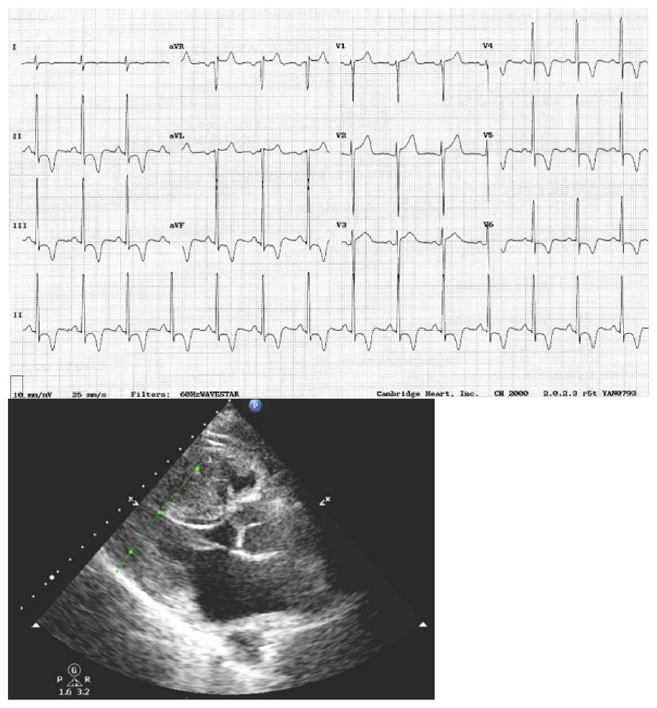
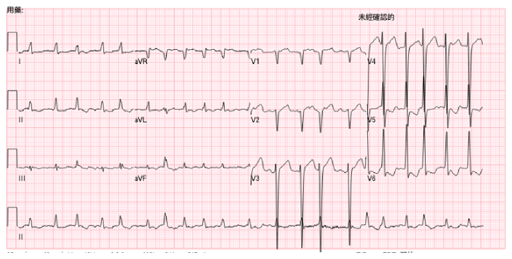
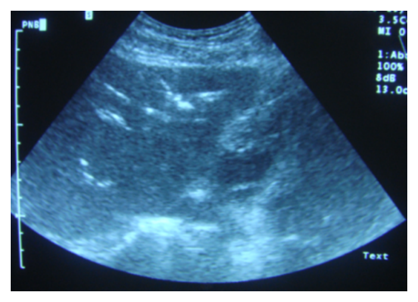

開卷有益 ／
醫師 ／ 醫學（三）（包括內科、家庭醫學科等科目及其相關臨床實例與醫學倫理） ／ 112 年第 2 次112 年第 2 次醫師醫學（三）（包括內科、家庭醫學科等科目及其相關臨床實例與醫學倫理）試題與答案
這一頁是民國 112 年第 2 次醫師醫學（三）（包括內科、家庭醫學科等科目及其相關臨床實例與醫學倫理）的整份歷屆試題，共 80 題，題目與標準答案出自考選部「國家考試試題及測驗式試題答案」開放資料，其中 80 題附有詳解。以下逐題列出題幹、選項與答案；要計時作答或記錄成績，請用線上練習。
考選部原始場次代碼：112080
線上作答這一科 →
全部 80 題
第 1 題
35歲女性，健檢發現血鈣偏低（2.05 mmol/L，參考值2.2～2.5），血清肌酸酐（creatinine, 0.6 mg/dL）、鈉（139 mEq/L）及鉀（3.8 mEq/L）則在正常範圍。對於此病患之低血鈣（hypocalcemia）應優先安排下列評估，但何者最不適當？
（A） 測血中白蛋白（albumin）及磷（phosphorus）濃度（B） 測血中副甲狀腺素（PTH）濃度（C） 測血中1,25(OH)2D濃度（D） 測血中鎂（magnesium）濃度答案：（C）
詳解與考點 正解：腎功能正常的輕度低血鈣初步評估。應先確認是否為低白蛋白造成的總鈣假性降低，並以磷、PTH 與鎂釐清副甲狀腺與電解質機轉；1,25(OH)2D 受 PTH 與腎臟調節，並非優先篩檢檢驗，故選 C。
A：白蛋白會影響總血鈣的解讀，磷濃度則有助區分 PTH 相關與其他病因，兩者都是初始評估的重要資料。
B：PTH 是低血鈣時最關鍵的反應性荷爾蒙之一；其高低可協助判讀是否為副甲狀腺功能低下或對低血鈣的適當反應。
D：低鎂可抑制 PTH 分泌並造成周邊對 PTH 反應不良，故測量鎂是低血鈣基本評估的一環。
本題考點：低血鈣症（hypocalcemia）評估——先辨識白蛋白影響的總鈣；副甲狀腺素（parathyroid hormone, PTH）、磷與鎂（magnesium）有助釐清病因；維生素 D 代謝物須依臨床情境選擇。
第 2 題
下列那一種情形最可能發生高血鉀（hyperkalemia）？
（A） 注射胰島素（B） 鎂（magnesium）缺乏（C） 使用非類固醇抗發炎藥物（non-steroidal anti-inflammatory drugs）（D） 使用β2-adrenergic agonists支氣管擴張劑答案：（C）
詳解與考點 正解：會降低腎臟排鉀的藥物。非類固醇抗發炎藥物（NSAIDs）抑制腎臟前列腺素，可能降低腎素與醛固酮活性並減少鉀排泄，因此最可能造成高血鉀，故選 C。
A：胰島素會促進鉀離子進入細胞，是急性高血鉀處置中用來暫時降低血鉀的機轉，故不會造成高血鉀。
B：鎂缺乏常使腎臟鉀流失增加，導致或加重低血鉀；它看似是電解質異常，但方向不是高血鉀。
D：β2-adrenergic agonists 刺激 Na+/K+-ATPase，將鉀移入細胞，也可使血鉀下降，故非答案。
本題考點：鉀平衡（potassium homeostasis）——胰島素與 β2-adrenergic agonists 促進鉀進入細胞；NSAIDs 可抑制腎素—醛固酮系統（renin-angiotensin-aldosterone system）而增加高血鉀風險。
第 3 題
35歲男性過去無慢性疾病，有飲酒習慣，至門診就醫，主訴疲倦以及尿液顏色變深，下列處置何者最不適當？
（A） 抽血檢驗total及direct bilirubin是否上升（B） 檢驗尿液中urobilinogen是否上升（C） 視診鞏膜及舌下黏膜是否變黃（D） 抽血檢驗creatinine是否上升答案：（D）
詳解與考點 正解：疲倦合併深色尿液，首先應辨識黃疸與膽紅素代謝異常。總膽紅素、直接膽紅素、尿中 urobilinogen 與黃疸理學檢查都直接相關；單獨檢驗 creatinine 無法優先釐清此主訴，故選 D。
A：total 與 direct bilirubin 可確認是否有高膽紅素血症，並協助區分以結合型或非結合型膽紅素為主，是合理的初步處置。
B：尿液 urobilinogen 的變化可配合膽紅素結果判斷溶血、肝細胞病變或膽道阻塞的可能性，故有診斷價值。
C：鞏膜與舌下黏膜黃染是黃疸的理學檢查線索；它看似只是視診，卻可迅速支持後續膽紅素相關評估。
本題考點：黃疸（jaundice）初步評估——總膽紅素與直接膽紅素（total and direct bilirubin）用以分類高膽紅素血症；尿中 urobilinogen 與理學檢查可輔助辨別膽紅素代謝與膽道問題。
第 4 題
65歲女性病人，每日服用trichlormethiazide 4 mg控制血壓已10年。某日半夜病人因突發左踝劇痛而醒來，發覺該處有明顯紅腫現象。醫師自該處抽取關節液化驗，發現有針狀或桿狀、強烈負雙折射性（negativebirefringent）結晶，並有部分結晶被白血球吞噬。針對此病人急性關節發炎之處置，下列何種藥物治療最不恰當？
（A） colchicine（B） febuxostat（C） ibuprofen（D） prednisolone答案：（B）
詳解與考點 正解：針狀或桿狀、強烈負雙折射結晶被白血球吞噬，是急性痛風性關節炎（acute gouty arthritis）的典型線索。急性期應優先消炎止痛；febuxostat 是長期降尿酸藥，不能作為這次急性發炎的處置，故選 B。
A：colchicine 抑制嗜中性球相關發炎反應，可用於急性痛風發作，故適當。
C：ibuprofen 為 NSAID，可減少急性痛風的疼痛與發炎；若無腎功能、腸胃道或其他禁忌，屬合理選項。
D：prednisolone 可在無法使用 NSAID 或 colchicine、或發炎較明顯時用於急性痛風；它看似不是「專治痛風」藥物，實際上能有效抑制急性發炎。
本題考點：急性痛風（acute gout）——尿酸鈉結晶（monosodium urate crystals）呈強烈負雙折射；急性期使用 NSAID、colchicine 或類固醇抗發炎，降尿酸治療（urate-lowering therapy）不是急性止痛藥。
第 5 題
承上題，上述病人10年後某日突發右腰劇痛，上廁所發現有血尿現象。急診室醫師以超音波檢查發現病人兩側腎臟中皆有結石，最大者直徑約1.2公分，但照一般X光片卻無法明顯看到結石。有關此病人結石之處置，下列何種藥物治療最不恰當？
（A） allopurinol（B） potassium citrate（C） probenecid（D） sodium bicarbonate答案：（C）
詳解與考點 正解：承上題的負雙折射結晶支持痛風，本題雙側 X 光不顯影腎結石與血尿，最符合尿酸結石（uric acid stone）。治療重點是降低尿酸生成及鹼化尿液；probenecid 增加尿酸尿中排泄，會提高尿酸在尿路中結晶的風險，故最不恰當的是 C。
A：allopurinol 抑制黃嘌呤氧化酶、減少尿酸生成，可用於高尿酸相關尿酸結石的長期預防，故非答案。
B：potassium citrate 可提高尿液 pH，使尿酸較易溶解，對尿酸結石的溶解與預防合理。
D：sodium bicarbonate 同樣能鹼化尿液，機轉上有利尿酸溶解；臨床仍須依病人鈉負荷與共病調整，但不是本題最不恰當者。
本題考點：尿酸結石（uric acid nephrolithiasis）——常為 X 光不透亮度較低的結石；尿液鹼化（urinary alkalinization）提高尿酸溶解度；促尿酸排泄藥（uricosuric agent）可能增加尿酸結石風險。
第 6 題
下列有關心導管檢查及冠狀動脈造影之敘述，何者錯誤？
（A） 心導管檢查可用以確診及評估許多心血管疾病，但擇期性（elective）心導管仍有可能發生意外，包括＜0.1%心肌梗塞、0.01%中風、0.1%死亡等風險（B） 檢查中使用之顯影劑可能產生嚴重類過敏（anaphylactoid）反應，機率為0.1～0.2%（C） 顯影劑可能造成急性腎臟損傷，因此術前均應給與病人足夠輸液及N-acetylcysteine以降低風險（D） 懷疑冠狀動脈心臟病之病人，於檢查前均應服用aspirin，但因心導管屬無菌操作，所以並不需預防性投與抗生素答案：（C）
詳解與考點 正解：顯影劑腎損傷的預防。足夠的靜脈輸液可依腎功能與容量狀態降低風險，但 N-acetylcysteine 並非所有接受心導管者都應一律給予，故 C 的「均應」錯誤。
A：心導管與冠狀動脈造影雖是常用侵入性檢查，仍有心肌梗塞、中風、死亡等罕見但重要風險，告知與風險評估必要，敘述合理。
B：含碘顯影劑可誘發嚴重類過敏反應，雖不常見，檢查前仍須辨識過去反應與高風險病人，故非答案。
D：單純診斷性心導管通常不需因無菌操作而常規預防性抗生素；但是否在檢查前使用 aspirin，須依是否已確立冠狀動脈疾病、急性冠心症可能性、出血風險及是否預計介入治療判斷，不能一概而論。故其「均應」措辭在現行實務具爭議。
本題考點：冠狀動脈造影（coronary angiography）風險——注意顯影劑相關急性腎損傷（contrast-associated acute kidney injury）與過敏樣反應；輸液策略須個別化，N-acetylcysteine 並非一律常規使用。
第 7 題
下列有關冠狀動脈心臟病的藥物治療敘述，何者正確？
（A） 乙型交感神經阻斷劑（beta blocker）可減少心肌耗氧，因此可以減少心絞痛，甚至可以降低心肌梗塞後之死亡率（B） 鈣離子阻斷劑（calcium channel blocker）可以擴張冠狀動脈、增加心肌供血，因此短效型dihydropyridine類鈣離子阻斷劑特別適用於無法耐受乙型交感神經阻斷劑（beta blocker）副作用的病人（C） 阿斯匹靈（aspirin）為可逆性血小板cyclooxygenase抑制劑，減低血小板活化能力，冠狀動脈心臟病人常用劑量為每日75～325 mg（D） 有機硝酸鹽類（nitrate）經人體代謝後，可釋放一氧化氮（NO）與血管平滑肌adenylyl cyclase結合，造成血管擴張答案：（A）
詳解與考點 正解：冠心病藥物的作用與預後效益。β 阻斷劑降低心率、收縮力與血壓，因而降低心肌耗氧、改善心絞痛；在特定心肌梗塞後病人亦可降低死亡風險，故選 A。
B：短效 dihydropyridine 類鈣離子阻斷劑可引起反射性心搏過速與缺血惡化，並非因無法耐受 β 阻斷劑就「特別適用」；長效製劑與適應症需分別評估。
C：aspirin 抑制血小板 cyclooxygenase 的作用是不可逆（irreversible），選項把此關鍵機轉說成可逆，故錯。
D：nitrate 釋放 NO 後主要活化血管平滑肌的可溶性 guanylyl cyclase，使 cGMP 上升而血管擴張，不是與 adenylyl cyclase 結合。
本題考點：冠狀動脈心臟病（coronary artery disease）藥物——β 阻斷劑（beta blocker）降低心肌耗氧；aspirin 不可逆抑制血小板 cyclooxygenase；硝酸鹽（nitrate）經 NO—cGMP 路徑造成血管擴張。
第 8 題
27歲男性病人與好友熬夜玩電玩，翌日清晨突然倒地急救，經119 EMT施行心肺復甦術，30分內送抵急診，中間多次VT/VF並施行DC shock，到院後CPCR共50分及電擊5次，除了急救藥物使用之外，並在50分鐘內找心臟外科醫師放置葉克膜。病況穩定後進行身體檢查，體溫35.4°C、HR：80/min、RR：20/min、BP：125/68mmHg，聽診呈現心尖及lower left sternal border（LLSB）有grade 3/6 systolic murmur。緊急冠狀動脈血管攝影顯示無冠狀動脈狹窄或血栓阻塞。心電圖跟心臟超音波如附圖所示。下列何者敘述錯誤？

（A） 這位病人的診斷是肥厚型心肌症（hypertrophic cardiomyopathy）（B） 因惡性心律不整可能復發，應考慮植入式心律去顫器﹙implantable cardioverter defibrillator, ICD﹚的置入（C） 如果病人左心室出口阻塞的症狀嚴重，可以考慮心導管酒精消融（alcohol ablation）或是外科手術，要是還是無法改善，可以考慮換心（D） 除了考慮乙型交感神經阻斷劑（beta blocker），鈣離子阻斷劑（calcium channel blocker）等，還要增加利尿劑的使用量，避免心臟衰竭答案：（D）
詳解與考點 正解：圖中心電圖可見明顯左心室肥厚電壓與多導程深倒置 T 波，心臟超音波則呈現心肌肥厚，結合年輕病人、心尖與 LLSB 收縮期雜音、清晨突發 VT/VF 猝倒及無冠狀動脈阻塞，符合肥厚型心肌症（hypertrophic cardiomyopathy, HCM），且須考慮左心室出口阻塞（left ventricular outflow tract obstruction, LVOTO）。HCM 的阻塞程度會在前負荷下降時惡化；增加利尿劑會減少血管內容量與左心室充盈，使左心室腔更小、加劇動態性出口阻塞，甚至誘發低血壓與心律不整。因此利尿劑僅能在確有容量鬱積時謹慎使用，不能以「增加使用量」作為避免心衰竭的常規策略，故錯誤的是 D。
A：肥厚型心肌症可造成不對稱性心肌肥厚、收縮期雜音及惡性心室心律不整。圖示的肥厚心肌與心電圖左心室肥厚伴再極化異常，與此診斷相符，故此敘述正確。
B：病人已發生 VT/VF 心跳停止，且未發現可逆的冠狀動脈阻塞原因；HCM 又是猝死性心律不整的高風險疾病。植入式心律去顫器（implantable cardioverter defibrillator, ICD）可偵測並終止復發的致命性心室心律不整，屬應考慮的二級預防措施，故此敘述正確。
C：有症狀且藥物控制不佳的阻塞型 HCM，可依解剖構造與病人條件考慮經導管酒精心肌消融（alcohol septal ablation）或外科室間隔心肌切除術（septal myectomy）以解除出口阻塞；若進展至嚴重、難治性心衰竭，心臟移植可作為末線治療選項，故此敘述正確。
本題考點：肥厚型心肌症（hypertrophic cardiomyopathy）可因動態性左心室出口阻塞（left ventricular outflow tract obstruction）與心室心律不整造成猝死；阻塞型 HCM 的藥物治療以降低心肌收縮力、維持適當前負荷為原則，常用 beta blocker 或 calcium channel blocker，應避免不必要的利尿造成前負荷下降；心跳停止存活者須評估植入式心律去顫器（implantable cardioverter defibrillator, ICD）作二級預防。
第 9 題
一位65歲男性過去無任何病史，今日早上因突然胸悶合併心悸至急診，心跳每分鐘約130下，心電圖如附圖，診斷為何？

（A） sinus tachycardia（B） atrial tachycardia（C） atrial fibrillation（D） ventricular tachycardia答案：（C）
詳解與考點 正解：官方答案為 C；惟本圖長導程 II 的 R-R 間期大致規則，部分 QRS 前似可辨識小波，且胸前導程受明顯偽影干擾，因此僅憑此圖無法有把握確認典型的心房顫動圖像。
A：竇性心搏過速（sinus tachycardia）雖可使心率達 130/min，但應有規則的 R-R 間期，且每個 QRS 波前可辨識形態一致的竇性 P 波；本圖的心室節律不規則且缺乏一致 P 波，不符。
B：心房心搏過速（atrial tachycardia）通常可見規則的異位 P 波或固定心房節律，心室節律多較規則；本圖並非規則的窄 QRS 心搏過速，而是 R-R 間期不規則，故不符。
D：心室心搏過速（ventricular tachycardia）典型為規則、寬 QRS 的心搏過速，常見 QRS 波形一致；本圖主要表現為不規則心室節律與缺乏一致 P 波，較支持心房顫動而非心室起源心搏過速。
本題考點：心房顫動（atrial fibrillation）的心電圖特徵為無可辨識的一致 P 波、基線 fibrillatory waves 與「完全不規則」（irregularly irregular）的 R-R 間期；快速心室反應（rapid ventricular response）可造成心悸、胸悶與心率上升；須與規則且有 P 波的竇性心搏過速（sinus tachycardia）及規則寬 QRS 的心室心搏過速（ventricular tachycardia）區分。
第 10 題
關於肺高壓的描述，下列何者錯誤？
（A） 病人在疾病初期所表現的症狀常無專一性（B） 當懷疑病人有肺高壓，心臟超音波是優先考量的篩檢工具（C） 本病的確診須靠右側心導管（right heart catheterization）檢查（D） 確診的病人常合併有貧血答案：（D）
詳解與考點 正解：肺高壓的診斷流程與典型表現。肺高壓病人的症狀常不具特異性，貧血並不是確診病人的典型合併表現或診斷特徵，因此錯誤的是 D。
A：早期常只有活動喘、疲倦、胸悶或暈眩等非特異性症狀，容易被誤認為其他心肺疾病，敘述正確。
B：心臟超音波可估計肺動脈壓、觀察右心室大小與功能，是懷疑肺高壓時重要的初步篩檢工具，故非答案。
C：右側心導管（right heart catheterization）可直接量測血流動力學數據，是確診及分類肺高壓的標準檢查，敘述正確。
本題考點：肺高壓（pulmonary hypertension）——症狀常非特異性；心臟超音波（echocardiography）用於篩檢；右側心導管（right heart catheterization）為血流動力學確診依據。
第 11 題
關於Raynaud's phenomenon的描述，下列何者錯誤？
（A） 常表現於硬皮症（scleroderma）的病人（B） 原發性的病人常有較嚴重的症狀（C） 年紀在50歲以上，動脈粥狀硬化是Raynaud's phenomenon常見的原因（D） 症狀嚴重的病人可以使用dihydropyridine鈣離子阻斷劑減輕症狀答案：（B）
詳解與考點 正解：原發性與次發性 Raynaud's phenomenon 的嚴重度差異。原發性通常較良性，症狀與組織缺血併發症多較輕；較嚴重者反而要懷疑硬皮症等次發性病因，故選 B。
A：Raynaud's phenomenon 常見於全身性硬皮症（scleroderma），且可早於其他明顯表現出現，是重要的次發性線索。
C：較晚發的血管痙攣樣症狀須考量動脈粥狀硬化等血管疾病或其他次發性原因，敘述合理。
D：dihydropyridine 鈣離子阻斷劑可使周邊血管擴張，是症狀明顯時常用的藥物選擇，故非答案。
本題考點：雷諾現象（Raynaud's phenomenon）——原發性（primary）多較良性；次發性（secondary）須警覺硬皮症（scleroderma）與血管疾病；dihydropyridine 鈣離子阻斷劑可改善血管痙攣症狀。
第 12 題
關於心包膜疾病的描述，下列何者正確？
（A） 急性心包膜炎的臨床分類主要包括fibrinous和effusive（serous or sanguineous）兩大類（B） 急性心包膜炎常見的症狀是以發燒為主，但罕見胸痛（C） 只有不到10%急性心包膜炎的病人在疾病過程中可以聽到friction rub（D） colchicine用於治療急性不明原因性心包膜炎（acute idiopathic pericarditis）病人的標準治療期程不可超過兩週，否則轉變成慢性心包膜炎的機率會增加答案：（A）
詳解與考點 正解：急性心包膜炎的臨床病理分類。急性心包膜炎可依滲出與纖維蛋白性表現區分為 fibrinous 與 effusive（serous 或 sanguineous）等型態，A 的描述正確，故選 A。
B：急性心包膜炎典型表現是胸痛，常隨深吸氣或平躺加重、坐起前傾改善；發燒可有但不是罕見胸痛，故錯。
C：心包摩擦音（friction rub）雖可能短暫而未被每次聽到，仍是急性心包膜炎的重要典型體徵，不能說疾病過程中僅不到 10% 可聽到。
D：colchicine 可降低急性不明原因性心包膜炎復發，治療期程並非不得超過兩週；選項將療程與慢性化風險的關係說反。
本題考點：急性心包膜炎（acute pericarditis）——常見胸痛與心包摩擦音（pericardial friction rub）；病理型態可見纖維蛋白性（fibrinous）或滲出性（effusive）變化；colchicine 可用於降低復發。
第 13 題
有關心衰竭的New York Heart Association Classification，下列何者當下的functional capacity是屬於class II？
（A） 一位24歲的大學畢業男性在兵役體檢的時候發現有主動脈瓣二葉畸形（bicuspid aortic valve），該位男性表示之前在學校的籃球課表現並無異樣（B） 一位45歲的魚市場搬運男工平常扛20公斤的魚貨從卡車走到倉庫的二樓都不需休息，但是兩週前心律不整發生後扛15公斤樓梯走到一半就很喘，完全無法走上二樓（C） 一位75歲的男性診斷有中度二尖瓣閉鎖不全。平時很少運動，每天頂多走到離家20公尺的便利商店買報紙。最近1個禮拜腳漸漸腫起來，還是可以走到該便利商店買報紙，但是會覺得明顯比之前喘和累（D） 一位50歲女性診斷有擴大型心肌症（dilated cardiomyopathy），平常可以躺平一覺睡到天亮，最近2個禮拜腳漸漸腫起來，需要頭部墊兩個枕頭才有辦法躺下來睡答案：（C）
詳解與考點 正解：NYHA class II 定義為休息舒適，但日常一般活動已引起疲倦、心悸、呼吸困難或心絞痛。C 的病人休息時無症狀，走到平日可完成的便利商店距離時已明顯較喘、較累，符合輕度活動受限，故選 C。
A：可正常打籃球且無異樣，表示一般與較劇烈活動均未引起症狀，屬 NYHA class I，而非 class II。
B：原可搬 20 kg 上二樓，現搬 15 kg 到樓梯一半已嚴重喘、無法完成工作，活動耐受度下降較顯著，較符合 class III 的明顯活動受限。
D：需墊兩個枕頭才能躺下為端坐呼吸，提示鬱血症狀已影響休息或臥位；它看似仍能睡著，但不符合 class II 的「休息舒適」。
本題考點：紐約心臟協會功能分級（New York Heart Association, NYHA functional classification）——class I 無活動限制；class II 一般活動即有症狀；class III 輕於一般活動即有症狀；class IV 休息時亦有症狀。
第 14 題
一位78歲男性病患因心房顫動就診，該心律不整病史已有1年以上。過去有高血壓及糖尿病史，最近有呼吸困難與腳部水腫；心臟超音波左心射出分率29%。無心肌梗塞、中風或周邊血管阻塞疾病病史。估算其CHA2DS2-VASc score，該病患之分數為：
（A） 2（B） 3（C） 4（D） 5答案：（D）
詳解與考點 正解：CHA2DS2-VASc score 的逐項加總。心衰竭或左心室功能不全得 1 分；高血壓得 1 分；年齡 78 歲屬至少 75 歲得 2 分；糖尿病得 1 分；無中風、血管疾病，且為男性不加性別分，因此總分為 1+1+2+1=5，故選 D。
A：2 分僅相當於年齡至少 75 歲的分數，漏算心衰竭、高血壓與糖尿病，故錯。
B：3 分仍未完整納入三項共病與年齡的加權；年齡至少 75 歲不是 1 分而是 2 分。
C：4 分看似已計入多個危險因子，但仍少算 1 分；左心室射出分率 29% 支持心衰竭／左心室功能不全這一項。
本題考點：CHA2DS2-VASc score——心衰竭（congestive heart failure）、高血壓（hypertension）、糖尿病（diabetes mellitus）各 1 分；年齡至少 75 歲得 2 分；用於心房顫動（atrial fibrillation）血栓栓塞風險評估。
第 15 題
44歲女性，體檢發現B型肝炎帶原後有定期追蹤，目前AST及ALT正常，HBeAg陰性，anti-HBe陽性。她的媽媽與哥哥也是B肝帶原，家族中一位阿姨得到肝細胞癌。下列敘述何者正確？
（A） 患者體內已無B型肝炎病毒（B） 患者目前處於B型肝炎自然病程中之「免疫耐受期（immune tolerance phase）」（C） 患者感染B型肝炎途徑最有可能是垂直感染（D） 患者無需每半年接受腹部超音波檢查答案：（C）
詳解與考點 正解：B 型肝炎帶原者有母親、兄長同為帶原者，呈現家庭中跨世代聚集；在臺灣此型態最符合母嬰垂直感染（vertical transmission），故選 C。
A：HBeAg 陰性、anti-HBe 陽性與肝功能正常，不代表體內已無 B 型肝炎病毒；帶原者仍可能有病毒複製或處於低複製狀態。
B：免疫耐受期通常見於 HBeAg 陽性且病毒量高、肝功能正常者；本例 HBeAg 陰性、anti-HBe 陽性，與此期不符。
D：B 型肝炎帶原且有肝細胞癌家族史者，肝癌監測格外重要；它看似肝功能正常便可放鬆追蹤，但正常 AST、ALT 不能排除肝癌風險。
本題考點：慢性 B 型肝炎（chronic hepatitis B）——母嬰垂直感染（vertical transmission）常造成家庭跨世代帶原；HBeAg 與 anti-HBe 用於自然病程判讀；肝細胞癌監測（hepatocellular carcinoma surveillance）須依風險持續進行。
第 16 題
曉華健康檢查發現bilirubin total/direct 為3.6/2.5 mg/dL，但alkaline phosphatase（ALP）、 γ-glutamyltranspeptidase（GGT）、aspartate aminotransferase（AST）、alanine aminotransferase（ALT）皆正常。下列疾病何者最有可能？
（A） Crigler-Najjar syndrome（B） Gilbert's syndrome（C） Dubin-Johnson syndrome（D） G6PD deficiency答案：（C）
詳解與考點 正解：總膽紅素 3.6 mg/dL、直接膽紅素 2.5 mg/dL，且 ALP、GGT、AST、ALT 都正常，表示以結合型高膽紅素血症為主、沒有膽汁鬱積或肝細胞損傷的酵素證據。Dubin-Johnson syndrome 是肝細胞將結合膽紅素排入膽小管的運輸缺陷，可造成孤立性結合型高膽紅素血症，故選 C。
A：Crigler-Najjar syndrome 是 UGT1A1 活性嚴重不足所致，造成的是未結合型高膽紅素血症，與本題 direct bilirubin 偏高不符。
B：Gilbert's syndrome 也是膽紅素結合能力輕度下降，常在禁食或壓力時出現輕微未結合型高膽紅素血症；它看似同樣是肝功能酵素正常的良性黃疸，但膽紅素型態不對。
D：G6PD deficiency 在氧化壓力下造成溶血，分解血紅素後主要增加未結合膽紅素，並可見溶血相關線索，不能解釋本題的結合型高膽紅素血症。
本題考點：結合型與未結合型高膽紅素血症（conjugated versus unconjugated hyperbilirubinemia）；Dubin-Johnson syndrome 的膽小管膽紅素排泄缺陷；Gilbert's syndrome 與 Crigler-Najjar syndrome 的膽紅素結合缺陷。
第 17 題
關於直腸肛門口的疾病，下列敘述何者錯誤？
（A） 生產時骨盆底受傷、失智、腦瘤、中風、重症肌無力或是腸躁症的患者比較容易會有大便失禁（B） 大便失禁的治療可以給與高纖飲食、糞便體積增加劑（bulking agent）及止瀉劑。或用生物回饋的方式來做復健治療（C） 痔瘡突出需要用手動的方式才能推回去屬於第四級痔瘡，可以給與高纖食物，含類固醇的塞劑以及考慮手術治療（D） 肛門直腸膿瘍常發生在免疫低下的患者（如糖尿病、血液疾病及HIV陽性的患者）。標準的治療是要切開膿瘍引流答案：（C）
詳解與考點 正解：「需要用手動方式才能推回去」的痔瘡分級。可手動復位的是第三級內痔（grade III hemorrhoids）；第四級內痔為持續脫出且無法復位或合併嵌頓，因此 C 的分級錯誤，故選 C。高纖、局部藥物與依嚴重度評估手術雖可作為處置方向，不能補正其分級錯誤。
A：骨盆底或神經肌肉功能受損會妨礙肛門括約肌、直腸感覺或排便控制；腸躁症的腹瀉與急便也可增加失禁風險，敘述正確，故非答案。
B：大便失禁的保守處置可依糞便性質調整纖維或體積增加劑，腹瀉型者可考慮止瀉藥，並以生物回饋訓練骨盆底與協調功能，敘述正確，故非答案。
D：肛門直腸膿瘍的核心處置是及早切開引流；糖尿病、血液疾病或 HIV 等免疫異常會提高複雜感染風險，但多數膿瘍源於肛門腺阻塞後的隱窩腺感染，「常發生在免疫低下者」措辭過強。此為題目的次要爭議，仍非本題要考的錯誤。
本題考點：內痔分級（hemorrhoid grading）——第三級需手動復位，第四級不可復位；糞便失禁（fecal incontinence）的保守治療；肛門直腸膿瘍（anorectal abscess）的切開引流。
第 18 題
關於急性腹膜炎的敘述何者錯誤？
（A） 當腸道穿孔時，腸道內的細菌會進入腹腔中而導致續發性腹膜炎（secondary peritonitis）（B） 血液的白血球過低，是導致自發性細菌性腹膜炎（spontaneous bacterial peritonitis）常見的重要因子（C） 身體檢查上，需要注意壓痛的位置，如McBurney's point疼痛，Murphy's sign以及是否有木板樣僵直（board-like rigidity）及腹膜炎的反彈痛（D） X光檢查要注意腸道外的氣體（free air），若有則代表有腸穿孔的可能性，需要緊急手術答案：（B）
詳解與考點 正解：自發性細菌性腹膜炎（spontaneous bacterial peritonitis, SBP）的危險因子。SBP 典型發生於肝硬化腹水，與腹水蛋白低、腸道細菌移位及肝臟疾病嚴重度有關；「血液白血球過低」不是其常見的重要致病因子，故錯誤的是 B。
A：腸道穿孔讓腸內容物與細菌進入腹腔，會造成需要尋找腹腔病灶的續發性腹膜炎（secondary peritonitis），敘述正確，故非答案。
C：急性腹膜炎的理學檢查須辨認局部壓痛與腹膜刺激徵象；McBurney's point、Murphy's sign、反彈痛及木板樣僵直可協助定位與判斷嚴重度，敘述正確，故非答案。
D：影像出現腹腔游離氣體時應高度懷疑消化道穿孔，並須緊急外科評估與處置，敘述正確，故非答案。
本題考點：自發性細菌性腹膜炎（spontaneous bacterial peritonitis）的臨床背景；續發性腹膜炎（secondary peritonitis）與腸穿孔；急性腹膜炎（acute peritonitis）的腹膜刺激徵象。
第 19 題
一位78歲男性，平時抽菸每日兩包已有五十年、每日睡前喜歡喝烈酒才能入睡。最近因吞嚥困難來到診間求診，胃鏡檢查及切片診斷為食道鱗狀上皮細胞癌。下列敘述何者錯誤？
（A） 喝酒與抽菸為食道鱗狀上皮細胞癌發生之危險因子（B） 病人同時也是口咽癌的高危險群（C） 釐清病人吞嚥困難的種類（固體、液體）和先後發展時序有助於吞嚥困難的鑑別診斷（D） 食道鱗狀上皮細胞癌產生之高鈣血症不會出現在沒有骨骼轉移的病人答案：（D）
詳解與考點 正解：食道鱗狀上皮細胞癌合併高鈣血症的機轉。此腫瘤可分泌副甲狀腺素相關蛋白（parathyroid hormone-related protein, PTHrP）造成體液性惡性腫瘤高鈣血症，即使沒有骨骼轉移也可能發生，因此 D 的「不會」錯誤，故選 D。
A：吸菸與飲酒皆是食道鱗狀上皮細胞癌的重要危險因子，兩者並存時風險更高，敘述正確，故非答案。
B：吸菸、飲酒造成的上呼吸消化道黏膜致癌暴露可形成區域癌化（field cancerization），病人也屬口咽癌高危險群，敘述正確，故非答案。
C：詢問吞嚥困難先影響固體或液體，以及病程是否漸進，有助區分機械性阻塞與蠕動障礙；此為鑑別診斷的一般判準，敘述正確，故非答案。
本題考點：食道鱗狀上皮細胞癌（esophageal squamous cell carcinoma）的危險因子；惡性腫瘤相關高鈣血症（humoral hypercalcemia of malignancy）；吞嚥困難（dysphagia）的鑑別。
第 20 題
一位67歲B型肝炎及肝硬化之男性病人，因吐血來到急診，內視鏡下可見食道靜脈瘤正在出血。下列敘述何者錯誤？
（A） 食道靜脈瘤出血可以內視鏡結紮術進行止血（B） 靜脈注射血管活性藥物包括terlipressin及octreotide，對食道靜脈瘤出血之止血有幫助（C） 病人於急性期可使用nonselective beta blockers改善急性出血（D） 內視鏡檢查要注意胃靜脈瘤（gastric varices）的有無和出血跡象答案：（C）
詳解與考點 正解：「食道靜脈瘤正在出血」的急性期。急性出血須以復甦、血管活性藥物與緊急內視鏡止血為主；nonselective beta blockers 用於出血控制後的再出血預防或原發預防，急性失血時可能降低血壓與器官灌流，不能用來改善當下出血，故 C 錯誤。
A：內視鏡靜脈瘤結紮術（endoscopic variceal ligation）可直接控制食道靜脈瘤出血，是急性止血的重要方式，敘述正確，故非答案。
B：terlipressin 與 octreotide 可降低門脈壓力與內臟血流，作為急性食道靜脈瘤出血的血管活性治療有助止血，敘述正確，故非答案。
D：胃靜脈瘤的出血處置途徑與食道靜脈瘤不盡相同，內視鏡應辨認其存在及出血徵象，敘述正確，故非答案。
本題考點：急性靜脈瘤出血（acute variceal bleeding）的初始處置；內視鏡靜脈瘤結紮術（endoscopic variceal ligation）；非選擇性 beta 阻斷劑（nonselective beta blockers）的再出血預防角色。
第 21 題
下列關於胰腺癌（pancreatic adenocarcinoma）之敘述何者錯誤？
（A） 先天BRCA2基因突變（germline BRCA2 mutation）者有較高罹病風險（B） 慢性胰臟炎（chronic pancreatitis）是胰腺癌之危險因子（C） 腫瘤若侵犯到上腸繫膜動脈（superior mesenteric artery）則無法手術切除（D） 手術切除後進行輔助化學治療（adjuvant chemotherapy）無確定療效，並非標準治療方式答案：（D）
詳解與考點 正解：胰腺癌根治性切除後的後續治療。可切除的胰腺腺癌在手術後接受輔助化學治療可改善復發與存活結果，已是標準治療的一部分；D 稱其沒有確定療效、不是標準方式，錯誤，故選 D。
A：germline BRCA2 mutation 會增加胰腺腺癌風險，亦可能影響遺傳諮詢與部分全身治療選擇，敘述正確，故非答案。
B：慢性胰臟炎造成持續發炎與組織損傷，為胰腺癌的危險因子，敘述正確，故非答案。
C：腫瘤侵犯上腸繫膜動脈通常代表局部晚期且難以達到完整切除；它看似只是鄰近血管侵犯，但動脈侵犯與靜脈可重建的情境不同，通常使初始手術切除不可行，敘述正確，故非答案。
本題考點：胰腺腺癌（pancreatic adenocarcinoma）的危險因子；可切除性（resectability）與上腸繫膜動脈侵犯；輔助化學治療（adjuvant chemotherapy）。
第 22 題
有關肝細胞癌（hepatocellular carcinoma, HCC），下列敘述何者正確？
（A） 射頻消融術（radiofrequency ablation, RFA）並不是一種根除性的治療（B） 經動脈化學栓塞（transarterial chemoembolization, TACE）的療效與開刀差不多（C） 由於肝細胞癌併發肝門靜脈主幹侵犯（main portal vein thrombosis）對於開刀或栓塞（TACE）的效果都不佳，因此建議做肝臟移植（D） 對於肝細胞癌的治療，除了腫瘤外，也要考慮到肝臟本身的情況（如：肝硬化、病毒性肝炎）答案：（D）
詳解與考點 正解：肝細胞癌治療不能只看腫瘤，還須同時評估肝功能與肝硬化程度。肝臟儲備功能、門脈高壓、病毒性肝炎控制及病人整體狀態都會影響切除、局部治療、移植或全身治療的適用性，D 正確，故選 D。
A：小型肝細胞癌在適當條件下可用射頻消融術（radiofrequency ablation, RFA）達成根除意圖治療，不能一概說不是根除性治療，故錯。
B：經動脈化學栓塞（transarterial chemoembolization, TACE）主要用於特定中期、不可切除病人，不能概括為療效與可切除腫瘤的開刀相當，故錯。
C：主幹門靜脈侵犯通常表示晚期疾病，肝臟移植因復發風險高而非其例行建議；此選項看似承認 TACE 與手術效果不佳，但錯在直接推論應移植，故錯。
本題考點：肝細胞癌（hepatocellular carcinoma）的分期導向治療；肝臟儲備功能（hepatic reserve）與門脈高壓；根除性局部治療（curative-intent local therapy）。
第 23 題
下列何種情況，並不是肝硬化常見的併發症？
（A） 肝性腦病變（hepatic encephalopathy）（B） 腹水（ascites）（C） 肝臟局部結節性增生（focal nodular hyperplasia）（D） 食道靜脈曲張（esophageal varices）答案：（C）
詳解與考點 正解：肝硬化的常見併發症。肝臟局部結節性增生（focal nodular hyperplasia, FNH）是良性肝臟病灶，並非門脈高壓或肝功能失代償造成的典型肝硬化併發症，故選 C。
A：肝硬化使肝臟解毒與氨代謝能力下降，並常受腸道出血、感染或便祕誘發肝性腦病變（hepatic encephalopathy），敘述為常見併發症，故非答案。
B：門脈高壓與腎臟鈉水滯留會造成腹水（ascites），是肝硬化失代償的典型表現，故非答案。
D：門脈高壓促使門體側枝循環形成，可導致食道靜脈曲張（esophageal varices）及出血，故非答案。
本題考點：肝硬化失代償（cirrhosis decompensation）；門脈高壓（portal hypertension）的併發症；肝臟局部結節性增生（focal nodular hyperplasia）。
第 24 題
58歲男性，高血壓已10年，無噁心、嘔吐，走路及一般日常生活不喘，下肢無水腫，腎臟功能持續惡化，腎絲球過濾率（eGFR）降至11 mL/min/1.73 m2、血色素11.3 g/dL、血壓128/80 mmHg，使用兩種降壓藥，血HCO3- 22 mEq/L、血P 3.5 mg/dL、血K+ 4.5 mEq/L，現階段下列何種治療或策略對病人日後的存活率最沒有助益？
（A） 維持目前血色素濃度（B） 持續控制血壓（C） 開始透析治療（D） 轉介照會腎臟科醫師做進一步處置答案：（C）
詳解與考點 正解：eGFR 11 mL/min/1.73 m2、但病人無尿毒症症狀、無液體過多且鉀離子、酸鹼與血壓穩定。透析開始應依尿毒症症狀、難以控制的液體負荷、電解質或酸鹼異常等臨床適應症綜合決定，不能只因 eGFR 11 就提早開始；故現階段開始透析對日後存活率最沒有助益，選 C。
A：目前血色素 11.3 g/dL 並無需因貧血立即介入，持續監測即可；不宜為追求此數值而以紅血球生成刺激劑積極治療，故非答案。
B：持續控制血壓可減緩腎功能惡化並降低心血管風險，敘述正確，故非答案。
D：eGFR 已降至嚴重程度，轉介腎臟科可協助病因、併發症與腎臟替代治療準備，故非答案。
本題考點：慢性腎臟病第五期（CKD G5）；透析起始時機（dialysis initiation）以症狀與難治併發症為主；腎臟專科共同照護（nephrology referral）。
第 25 題
48歲男性，末期腎病病人，無糖尿病病史和家族史，接受血液透析治療2年後，接受親屬腎臟移植。術後移植腎功能正常，血中creatinine下降至0.8 mg/dL，但飯前血糖多次檢測皆高於200 mg/dL，下列何種藥物與其血糖升高最有關係？
（A） cyclosporine（B） tacrolimus（C） sirolimus（D） mycophenolate mofetil答案：（B）
詳解與考點 正解：腎臟移植後、移植腎功能正常卻出現反覆飯前血糖超過 200 mg/dL，代表移植後糖尿病（post-transplant diabetes mellitus）的藥物相關風險。tacrolimus 是鈣調神經磷酸酶抑制劑（calcineurin inhibitor），可損害胰島 beta 細胞胰島素分泌，較明顯增加高血糖與新發糖尿病風險，故選 B。
A：cyclosporine 同為鈣調神經磷酸酶抑制劑，也可能影響糖代謝；它看似很接近正解，但相較 tacrolimus，致糖尿病風險通常較低，故非最佳答案。
C：sirolimus 可能影響胰島素敏感性，但本題問最相關的典型移植免疫抑制藥物，不如 tacrolimus 典型，故非答案。
D：mycophenolate mofetil 主要抑制嘌呤合成以抑制淋巴球增生，並非移植後高血糖的主要藥物原因，故非答案。
本題考點：移植後糖尿病（post-transplant diabetes mellitus）；tacrolimus 的代謝不良反應；鈣調神經磷酸酶抑制劑（calcineurin inhibitors）。
第 26 題
下列何種慢性腎小管間質性病變，其致病機轉尚未被證實與DNA損傷有關？
（A） Mesoamerican nephropathy（B） karyomegalic interstitial nephritis（C） Chinese herbal nephropathy（D） Balkan endemic nephropathy答案：（A）
詳解與考點 正解：慢性腎小管間質性病變中「尚未被證實與 DNA 損傷有關」者。Mesoamerican nephropathy 多見於高溫環境下從事重勞力者，病因推測涉及反覆脫水、熱壓力與其他暴露，並未確立為 DNA 損傷所致，故選 A。
B：karyomegalic interstitial nephritis 與 FAN1 基因異常相關，細胞核巨大反映 DNA 損傷修復機制缺陷，故非答案。
C：Chinese herbal nephropathy 與含馬兜鈴酸（aristolochic acid）的草藥暴露相關，馬兜鈴酸可形成 DNA 加合物並造成突變，故非答案。
D：Balkan endemic nephropathy 同樣與馬兜鈴酸相關暴露及其 DNA 損傷機轉有關，故非答案。
本題考點：慢性腎小管間質性腎炎（chronic tubulointerstitial nephropathy）；DNA 損傷修復（DNA damage repair）與 FAN1；馬兜鈴酸腎病變（aristolochic acid nephropathy）。
第 27 題
下列有關腎結石症（nephrolithiasis）的處置敘述，何者錯誤？
（A） 肌肉注射非類固醇抗發炎劑對於腎絞痛（renal colic）的療效可比擬甚至優於類鴉片藥物（B） 補充大量體液或投與利尿劑無法促進結石排出（C） 內科排出療法可降低輸尿管痙攣並增加結石自行排出率（D） 統合分析結果顯示體外震波（extracorporeal shock wave）是輸尿管結石的治療首選答案：（D）
詳解與考點 正解：輸尿管結石的治療首選不能只用單一術式概括。體外震波碎石術（extracorporeal shock wave lithotripsy, ESWL）與輸尿管鏡取石術（ureteroscopy）各有適應症，須依結石位置、大小、密度、阻塞與病人條件選擇，不能說 ESWL 一律是首選，故 D 錯誤。判準在於結石位置與大小：近端小結石較適合 ESWL，遠端或較硬、較大的結石多優先考慮輸尿管鏡。
A：非類固醇抗發炎藥可降低輸尿管發炎與前列腺素介導的疼痛，對腎絞痛的止痛效果可與類鴉片藥物相比，且可減少鴉片類不良反應，敘述正確，故非答案。
B：急性阻塞期強迫大量補液或使用利尿劑不能促進結石排出，反而可能增加腎盂壓力與疼痛，敘述正確，故非答案。
C：內科排出療法（medical expulsive therapy）可使用使輸尿管平滑肌較放鬆的藥物，提高部分輸尿管結石自行排出的機會，敘述正確，故非答案。
本題考點：腎絞痛（renal colic）的止痛；內科排出療法（medical expulsive therapy）；輸尿管結石（ureteral stones）的 ESWL 與 ureteroscopy 選擇。
第 28 題
下列何項處置無助於減緩自體顯性多囊性腎臟病（autosomal dominant polycystic kidney disease, ADPKD）病人的腎功能惡化？
（A） 第一線使用鈣離子阻斷劑，控制血壓在140/90 mmHg之下，在腎功能不良下，收縮壓儘量控制小於110mmHg（B） 如果有囊泡感染的狀況，使用lipid-soluble antibiotics，如：trimethoprim-sulfamethoxazole、quinolones、chloramphenicol，因為囊泡穿透性較佳，效果較好，常需要使用四星期以上（C） 使用vasopressin antagonist（tolvaptan）來減緩囊泡的形成及腎功能惡化（D） 建議病人限制低鹽（＜5 g/day）飲食答案：（A）
詳解與考點 正解：ADPKD 腎功能保護的降壓策略。自體顯性多囊性腎臟病常優先使用抑制腎素－血管張力素系統的藥物控制血壓；鈣離子阻斷劑不是「第一線」的通則，而「腎功能不良時收縮壓儘量小於 110 mmHg」也不是可一概套用的目標，可能造成低灌流風險，故 A 無助於減緩惡化。具體血壓目標與藥物選擇須依年齡、腎功能與耐受性個別化。
B：囊泡感染時須選擇能進入囊泡的抗生素；脂溶性較佳的藥物較能達到感染囊泡，療程常須延長，敘述正確，故非答案。
C：vasopressin antagonist tolvaptan 可降低囊泡生長速度並延緩部分具快速進展風險病人的腎功能惡化，敘述正確，故非答案。
D：限制鈉鹽攝取有助血壓控制及減少腎臟負擔，是 ADPKD 整體照護的合理措施，故非答案。
本題考點：自體顯性多囊性腎臟病（autosomal dominant polycystic kidney disease, ADPKD）；腎素－血管張力素系統（renin-angiotensin system）抑制；vasopressin V2 receptor antagonist 與 tolvaptan。
第 29 題
有關糖尿病腎病變，下列何者錯誤？
（A） 是目前臺灣最常見造成慢性腎臟病的原因（B） 大約有20%糖尿病患者產生糖尿病腎病變（C） 產生糖尿病腎病變的危險因子包括gene polymorphisms affecting the activity of the renin-angiotensin-aldosteroneaxis（D） 糖尿病視網膜病變和病理上的Kimmelstiel-Wilson nodules有很強的相關性答案：（B）
詳解與考點 正解：糖尿病腎病變的盛行比例。糖尿病腎病變的比例會隨定義、糖尿病類型、族群與觀察期間而異；常見估計約為 20%～40%，終生風險可更高。B 固定寫成約 20% 過度簡化且偏低，故錯誤的是 B。
A：糖尿病腎病變是臺灣慢性腎臟病與末期腎病的重要且最常見原因之一，敘述正確，故非答案。
C：影響 renin-angiotensin-aldosterone axis 活性的基因多型性可影響腎小球高壓與個人易感性，是糖尿病腎病變的危險因子之一，故非答案。
D：糖尿病視網膜病變與典型糖尿病腎絲球病變，包括 Kimmelstiel-Wilson nodules，具有強相關性；它看似只是另一器官病變，但兩者都反映長期微血管損傷，故非答案。
本題考點：糖尿病腎病變（diabetic kidney disease）的流行病學；腎素－血管張力素－醛固酮系統（renin-angiotensin-aldosterone system）；Kimmelstiel-Wilson nodules。
第 30 題
在哺乳類腎臟的腎絲球–腎小管發育時，不同時期有不同的基因調控。在前腎小管聚合期（pretubularaggregation）時，下列那一個基因未參與？
（A） VEGF-A / Kdr（B） Wnt4（C） Emx2（D） Fgf8答案：（A）
詳解與考點 正解：前腎小管聚合期（pretubular aggregation）所需的腎臟發育基因。Wnt4、Emx2 與 Fgf8 參與後腎間質細胞凝聚及腎元形成的早期調控；VEGF-A / Kdr 主要與血管生成及內皮細胞訊號相關，並非此期腎小管聚合的核心調控基因，故選 A。辨識重點在於區分血管生成訊號與後腎間質上皮化訊號分屬不同環節。
B：Wnt4 促進後腎間質細胞由間質轉為上皮並形成腎小管前驅結構，是前腎小管聚合的重要訊號，故非答案。
C：Emx2 參與泌尿生殖系統與腎臟發育的轉錄調控，缺失會影響腎元形成，故非答案。
D：Fgf8 參與早期腎元形成與細胞存活、分化的訊號調節，故非答案。
本題考點：腎元形成（nephrogenesis）；前腎小管聚合（pretubular aggregation）；Wnt4、Emx2 與 Fgf8 的腎臟發育調控。
第 31 題
一位52歲女性有多處關節疼痛的症狀，經診斷患有fibromyalgia，且未伴隨其他的免疫疾病，其典型的血中C-reactive protein（CRP）和erythrocyte sedimentation rate（ESR）的值應為如何？
（A） CRP和ESR皆上升（B） CRP上升，但ESR正常（C） CRP正常，但ESR上升（D） CRP和ESR皆正常答案：（D）
詳解與考點 正解：纖維肌痛（fibromyalgia）且未伴隨其他免疫疾病。纖維肌痛是中樞疼痛處理失調為主的慢性疼痛症候群，不是系統性發炎疾病，因此典型 CRP 與 ESR 均正常，故選 D。
A：CRP 和 ESR 同時上升較支持發炎、感染或自體免疫疾病；廣泛疼痛容易讓人聯想到發炎性風濕病，但本題已排除合併免疫疾病，故錯。
B：單獨 CRP 上升不屬纖維肌痛的典型實驗室表現，若出現應評估其他發炎或感染原因，故錯。
C：單獨 ESR 上升也不是纖維肌痛的典型表現，需考慮貧血、發炎或其他共病，故錯。
本題考點：纖維肌痛（fibromyalgia）；發炎指標（inflammatory markers）CRP 與 ESR；廣泛疼痛（widespread pain）的鑑別診斷。
第 32 題
有關類風濕性關節炎臨床表現，下列何者正確？
（A） 通常一開始以左右不對稱、大關節發炎為主，後期才會影響小關節（B） 當遠端指間關節（distal interphalangeal joint）也受影響時，通常代表同時也患有退化性關節炎（C） 伸側（extensor）肌腱發生肌腱滑膜炎（tenosynovitis）的機會比曲側（flexor）肌腱常見很多（D） 頸椎發炎雖然少見，但是通常發生在疾病的早期答案：（B）
詳解與考點 正解：類風濕性關節炎（rheumatoid arthritis, RA）典型侵犯關節的分布。RA 常累及近端指間關節與掌指關節，遠端指間關節通常保留；若 DIP 也明顯受影響，常提示同時存在退化性關節炎等另一病因，因此 B 正確，故選 B。
A：RA 常以對稱性小關節滑膜炎開始，而不是先不對稱侵犯大關節，故錯。
C：RA 的屈側（flexor）肌腱滑膜炎較具代表性，並非伸側肌腱遠比曲側常見，故錯。
D：RA 可有頸椎，尤其寰樞椎，病變，但多在疾病較久或侵蝕性病程後出現，不能說通常發生於早期，故錯。
本題考點：類風濕性關節炎（rheumatoid arthritis）的對稱性小關節炎；遠端指間關節（distal interphalangeal joint）保留；肌腱滑膜炎（tenosynovitis）與頸椎侵犯。
第 33 題
有關inflammatory myopathies的鑑別診斷，下列何者正確？
（A） dermatomyositis主要以成人為主，polymyositis則是成人跟幼童都可以發生（B） inclusion body myositis主要發生在大於50歲病人，且以女性居多（C） polymyositis病人的肌肉切片以endomysial與perivascular inflammation表現，且以CD8+ T cells浸潤為主（D） necrotizing myopathy與惡性腫瘤較無關答案：（C）
詳解與考點 正解：polymyositis 的肌肉切片型態。polymyositis 以肌束內（endomysial）發炎及 CD8+ T cells 侵入非壞死肌纖維為典型；雖然選項同時寫到 perivascular inflammation，但其以 CD8+ T cells 為主的關鍵鑑別方向正確，故選 C。
A：dermatomyositis 可發生於成人與兒童；polymyositis 主要見於成人，選項將年齡分布說反，故錯。
B：inclusion body myositis 多見於 50 歲以上男性，而非以女性居多，故錯。
D：necrotizing myopathy 可與惡性腫瘤、藥物或自體免疫相關，不能說與惡性腫瘤較無關，故錯。
本題考點：發炎性肌病（inflammatory myopathies）的肌肉病理；polymyositis 的 endomysial CD8+ T-cell inflammation；dermatomyositis、inclusion body myositis 與 necrotizing myopathy 的鑑別。
第 34 題
病人出現下列何種感染時，最應考慮是否有補體系統的缺損（complement deficiencies）？
（A） 反覆分枝桿菌（Mycobacteria）感染（B） 反覆奈瑟氏菌（Neisseria）感染（C） 反覆帶狀疱疹（herpes zoster）感染（D） 反覆葡萄球菌（Staphylococcus）感染答案：（B）
詳解與考點 正解：反覆奈瑟氏菌感染。終末補體成分 C5 至 C9 形成膜攻擊複合體（membrane attack complex, MAC），對 Neisseria 的殺菌尤其重要；反覆 Neisseria 感染應優先考慮補體系統缺損，故選 B。
A：反覆分枝桿菌感染較應考慮細胞媒介免疫缺陷，例如 IL-12/IFN-gamma 軸或 T 細胞功能異常，而非典型補體缺損，故非答案。
C：反覆帶狀疱疹反映對病毒的細胞媒介免疫控制不足，較應評估 T 細胞或其他免疫抑制狀態，故非答案。
D：反覆葡萄球菌感染較常見於嗜中性白血球數量或功能、皮膚屏障或抗體相關問題；它看似都是反覆細菌感染，但不具終末補體缺損對 Neisseria 的特異性，故非答案。
本題考點：補體缺損（complement deficiencies）；終末補體與膜攻擊複合體（membrane attack complex, MAC）；奈瑟氏菌（Neisseria）感染的免疫缺陷鑑別。
第 35 題
下列有關退化性關節炎（osteoarthritis, OA）之敘述，何者錯誤？
（A） 手部及髖關節之OA與遺傳基因較有關，而膝關節與遺傳基因的相關性較少（B） 關節type 2之軟骨主要被MMPs（matrix metalloproteinases）破壞（C） 華人髖關節OA較白種人少見（D） 90%以上OA患者必須先行使用非類固醇抗發炎藥物（NSAID）本題送分，無標準答案
詳解與考點 本題經考選部公告一律給分。作答任一選項皆得分。原因是題幹要求找錯誤敘述，依常見退化性關節炎教學，非藥物介入與個別化止痛不應被「90%以上患者必須先行使用 NSAID」取代，只有一項呈現明顯問題；其餘選項沒有從文字可辨識的同等爭點。公告送分的具體原因無法由題幹還原，故送分。
A：手部與髖關節 OA 的遺傳傾向通常比膝關節更常被強調，雖各部位的遺傳與環境貢獻不同，敘述方向可成立。
B：選項的「關節type 2之軟骨」未寫明 type II collagen；若其原意是 type II collagen，type II collagen 是關節軟骨的重要成分，MMPs 參與其分解與基質降解，敘述可成立；若非此意，選項文字本身不完整，不能逕自補成 type II collagen。
C：不同族群的髖關節 OA 盛行與表現可有差異，華人較白種人少見是常見的流行病學描述。
D：OA 的處置應依疼痛、功能、共病與風險選擇，運動、減重與其他非藥物措施都有角色；以絕對比例與必須先用 NSAID 描述不合個別化原則。
本題考點：退化性關節炎處置（osteoarthritis management）要先評估疼痛、功能與共病；非藥物治療（nonpharmacologic management）是基礎，NSAID 的使用須衡量個別風險而非套用固定比例。
第 36 題
一位35歲婦女，因右側乳房有一腫塊，後接受切除切片證實為estrogen receptor（ER）陽性、progesteronereceptor（PR）陽性、HER2陽性（組織免疫染色3+）之侵襲性乳癌，與主治醫師討論後，病人決定接受右側乳房保留手術和前哨淋巴結切片手術，其最後病理檢體證實腫瘤為直徑3公分，腋下淋巴結2顆轉移之侵襲性乳癌，下列何者術後輔助治療對降低病人乳癌局部及遠處轉移之效果最好？
（A） anthracycline為主化學治療，加上抗賀爾蒙治療以及放射線治療（B） 紫杉醇為主化學治療，加上抗賀爾蒙治療和放射線治療（C） 合併化學治療以及卵巢去功能手術（D） 化學治療合併trastuzumab，以及抗賀爾蒙治療和放射線治療答案：（D）
詳解與考點 正解：乳房保留術後、腋下淋巴結轉移，且腫瘤同時 ER、PR 與 HER2 陽性。此為具復發風險的 HER2 陽性早期侵襲性乳癌，術後須兼顧全身性化學治療、抗 HER2 標靶治療、內分泌治療及乳房保留手術後的放射治療；trastuzumab 能針對 HER2 過度表現提供額外的復發風險降低，故選 D。
A：以 anthracycline 為主的化學治療可作為某些乳癌化療組合的一部分，抗荷爾蒙治療及放射治療方向也正確；但（A）缺少針對 HER2 陽性腫瘤的 trastuzumab，未完整處理本題最重要的生物標記。
B：以紫杉醇為主的化學治療亦可能用於乳癌，且合併內分泌與放射治療看似涵蓋多個治療面向；但（B）同樣未納入抗 HER2 治療，故不如（D）能降低局部與遠處復發。
C：卵巢去功能可作為停經前荷爾蒙受體陽性乳癌的內分泌策略之一，但（C）未包含乳房保留術後所需的放射治療，也漏掉 HER2 標靶治療，治療不足。
本題考點：HER2 陽性乳癌（HER2-positive breast cancer）須考慮抗 HER2 標靶治療 trastuzumab；荷爾蒙受體陽性乳癌（hormone receptor-positive breast cancer）需內分泌治療；乳房保留手術（breast-conserving surgery）後通常合併放射治療。
第 37 題
針對原發部位不明轉移腺癌（adenocarcinoma of unknown primary）之病人，臨床醫師可藉由組織學染色之一系列流程，來鑑別可能之原發腺癌，下列敘述何者錯誤？
（A） 若CK（cytokeratin）7+，CK20+：可以幫助診斷卵巢癌或胰臟癌（B） 若CK（cytokeratin）7+，CK20-：可以幫助診斷子宮內膜癌或肺癌（C） 若CK（cytokeratin）7-，CK20+：可以幫助診斷前列腺癌或甲狀腺癌（D） 若CK（cytokeratin）7-，CK20-：可以幫助診斷肝細胞癌或腎細胞癌答案：（C）
詳解與考點 正解：以 CK7/CK20 表現型推測原發部位。CK7−／CK20+ 的常見對應為大腸或 Merkel cell carcinoma 等，並不是前列腺癌或甲狀腺癌；前列腺癌常以 PSA 等標記辨識，甲狀腺癌多為 CK7 陽性。因此（C）的配對錯誤，故選 C。
A：CK7+／CK20+ 可見於卵巢黏液性腫瘤及胰膽系腫瘤等；此表現型並非絕對特異，但可作為鑑別流程的線索，敘述合理。
B：CK7+／CK20− 是子宮內膜癌與肺腺癌常見的表現型之一，仍須配合器官特異性免疫染色判讀，敘述正確。
D：CK7−／CK20− 可見於肝細胞癌與腎細胞癌等腫瘤；這個型態亦需配合其他標記確認，但作為可能來源的提示正確。
本題考點：原發不明癌（cancer of unknown primary）的免疫組織化學（immunohistochemistry）以 CK7/CK20 作初步分流；後續須合併器官特異性標記，不能僅憑單一染色型態確診。
第 38 題
某些癌症的治療可能與某些second malignancies的發生相關。下列有關癌症治療與second malignancy的組合，何者最不恰當？
（A） topoisomerase inhibitors；acute lymphoblastic leukemia associated with deletions in chromosome 5 or 7（B） tamoxifen；endometrial cancer（C） 異體骨髓移植使用T-cell depletion；EBV-associated lymphoproliferative disorder（D） 化學治療；myelodysplastic syndrome答案：（A）
詳解與考點 正解：治療相關次發惡性腫瘤的典型配對。染色體 5 或 7 缺失及前驅骨髓異常症候群較典型地與 alkylating agents 相關；topoisomerase II inhibitors 則較常與短潛伏期的治療相關急性骨髓性白血病及特定平衡易位相關。因此（A）把 topoisomerase inhibitors 與錯誤的白血病型態及染色體異常配在一起，最不恰當，故選 A。
B：tamoxifen 具部分雌激素致效作用，長期使用會增加子宮內膜病變與子宮內膜癌風險，這是重要且正確的次發惡性腫瘤關聯。
C：異體骨髓移植後的 T-cell depletion 會削弱對 EBV 感染 B 細胞的免疫監控，因而增加 EBV-associated lymphoproliferative disorder 的風險，配對正確。
D：先前接受細胞毒性化學治療可造成治療相關骨髓異常症候群（therapy-related myelodysplastic syndrome），此關聯正確。
本題考點：治療相關骨髓性腫瘤（therapy-related myeloid neoplasms）——alkylating agents 常與染色體 5、7 異常及較長潛伏期相關；topoisomerase II inhibitors 常與特定易位相關；移植後淋巴增生性疾病（post-transplant lymphoproliferative disorder）與 EBV 及免疫抑制有關。
第 39 題
胃的惡性腫瘤中，腺癌（adenocarcinoma）約占85%。其餘15%非腺癌的胃的惡性腫瘤中，下列敘述何者正確？
（A） 胃的淋巴瘤（lymphoma）中，T-cell origin遠多於B-cell origin（B） 局限於胃部的mucosa-associated lymphoid tissue（MALT）lymphoma第一線治療為清除Helicobacter pylori的抗生素治療（C） 局限於胃部的leiomyosarcoma治療首選（treatment of choice）是化學治療合併放射治療（D） 胃的gastrointestinal stromal tumor（GIST）若轉移至肝臟，應考慮組合式化學治療答案：（B）
詳解與考點 正解：「局限於胃部」的 MALT lymphoma。胃 MALT lymphoma 常與 Helicobacter pylori 慢性感染相關，早期局限性疾病可因根除 H. pylori 而緩解，因此根除治療是第一線處置，故選 B。
A：胃淋巴瘤以 B-cell origin 較常見，尤其是 MALT lymphoma 與瀰漫性大 B 細胞淋巴瘤；（A）將 T-cell origin 說成遠多於 B-cell origin，與流行病學不符。
C：胃部平滑肌肉瘤屬局部可切除腫瘤時，治療重點是手術切除；（C）將化學治療合併放射治療說成首選，忽略局部控制的主要方式。
D：轉移性 GIST 的系統治療重點是酪胺酸激酶抑制劑（tyrosine kinase inhibitor），而非傳統組合式化學治療；它看似符合「轉移癌用化療」的概念，但 GIST 對傳統化療反應不佳。
本題考點：胃 MALT 淋巴瘤（gastric MALT lymphoma）與 Helicobacter pylori 的關聯；胃腸道基質瘤（gastrointestinal stromal tumor, GIST）多以標靶治療處理；胃部非腺癌須依病理類型選擇治療。
第 40 題
下列藥物中何者最常使用於第四期腎細胞癌的全身性藥物治療？
（A） 化學治療的doxorubicin（B） 標靶治療的axitinib（C） 標靶治療的trastuzumab（D） 免疫治療的sipuleucel-T答案：（B）
詳解與考點 正解：第四期腎細胞癌的全身性治療。晚期腎細胞癌常以抑制血管新生或其他訊號路徑的標靶藥物，以及免疫治療為主；axitinib 是 VEGF receptor tyrosine kinase inhibitor，可用於腎細胞癌的系統治療，故選 B。
A：腎細胞癌對傳統細胞毒性化學治療反應有限，doxorubicin 並非第四期腎細胞癌最常用的系統治療藥物。
C：trastuzumab 的標的為 HER2，主要用於 HER2 過度表現的乳癌、胃癌等，不是腎細胞癌的標準標靶治療。
D：sipuleucel-T 是用於特定前列腺癌的細胞免疫治療，並非腎細胞癌的治療。
本題考點：晚期腎細胞癌（advanced renal cell carcinoma）的系統治療常用 VEGF 訊號抑制與免疫治療；axitinib 是 VEGF receptor tyrosine kinase inhibitor；不同癌種的標靶藥物需依腫瘤生物標記與適應症區分。
第 41 題
關於癌症預防的敘述，下列何者錯誤？
（A） B型肝炎疫苗能預防因為慢性B型肝炎病毒感染導致的肝炎、肝細胞癌（B） 如果先前未被某一型的人類乳突病毒感染過，接受該型人類乳突病毒疫苗，能預防該型人類乳突病毒感染的持續感染（C） 如果先前未被某一型的人類乳突病毒感染過，接受該型人類乳突病毒疫苗，能預防該型人類乳突病毒感染所造成的癌前病變（D） 人類乳突病毒疫苗接種過後可有終生免疫效果答案：（D）
詳解與考點 正解：HPV 疫苗接種後是否已證實「終生」免疫。疫苗可預防尚未感染型別的持續感染與相關癌前病變，但免疫保護的持續時間仍以長期追蹤資料評估，不能宣稱已有終生免疫效果；（D）使用絕對化的「終生」敘述，故為錯誤選項。
A：B 型肝炎疫苗可預防慢性 HBV 感染，進而降低 HBV 相關肝硬化與肝細胞癌風險，屬癌症一級預防。
B：對尚未感染的 HPV 型別接種相對應疫苗，可預防該型別的持續感染，敘述正確。
C：對尚未感染的 HPV 型別接種疫苗，也能降低該型別相關癌前病變；疫苗不是治療既有感染，但（C）的前提已限定為先前未感染，故正確。
本題考點：癌症一級預防（primary cancer prevention）包括 HBV 與 HPV 疫苗；HPV vaccine 對尚未感染的型別具預防效果，但不是既有 HPV 感染的治療；疫苗保護持續性須依追蹤證據判讀。
第 42 題
下列有關血小板（platelet）的敘述，何者錯誤？
（A） 血小板無核，也無RNA，因此沒有合成蛋白質的能力（B） 正常的血小板之直徑約1～5 μm，平均在血液中的存活期約7～10天（C） 血小板的GPIb-IX-V複合體，對血小板之黏附（adhesion）與血小板之活化非常重要（D） 在急性冠狀動脈症候群（acute coronary syndrome）的病人血液中，其血小板彼此之間，以及血小板與白血球之間的交互作用均增強答案：（A）
詳解與考點 正解：血小板雖無細胞核，是否因此不能合成蛋白質。血小板是無核細胞碎片，卻仍保有 RNA 與蛋白質轉譯機制，可進行有限的蛋白質合成；（A）把無核延伸成「也無 RNA、沒有合成蛋白質能力」是錯誤推論，故選 A。
B：正常血小板直徑約 1～5 μm，周邊血中的存活期約 7～10 天，敘述正確。
C：GPIb-IX-V 複合體與 von Willebrand factor 結合，對血小板在受損血管壁的初始黏附及後續活化很重要，敘述正確。
D：急性冠狀動脈症候群時，血小板活化與血小板－白血球交互作用均會增加，促進血栓與發炎反應，敘述正確。
本題考點：血小板（platelet）雖無細胞核仍含 RNA 並可有限蛋白質合成；血小板黏附（platelet adhesion）仰賴 GPIb-IX-V 與 von Willebrand factor；急性冠狀動脈症候群（acute coronary syndrome）伴隨血小板活化。
第 43 題
下列有關造血幹細胞移植（hematopoietic stem cell transplantation）的敘述，何者最不恰當？
（A） 一位病人若有n個同父同母的兄弟姊妹，則可以找到至少一位HLA全合的兄弟姊妹的機率是1-(0.75)n（B） 進行異體造血幹細胞移植（allogeneic hematopoietic stem cell transplantation），若是ABO血型不相合，通常在移植前的免疫抑制劑的劑量必須增加或是進行recipient之脾臟切除（C） 自體造血幹細胞移植（autologous hematopoietic stem cell transplantation）並無graft-versus-hostdisease（GVHD）或是graft rejection的風險（D） 周邊血液中，在施打granulocyte colony-stimulating factor（G-CSF）數天之後，也可能收集到足夠的造血幹細胞進行移植。若是收集的數量不足，施打plerixafor（一種CXCR4的拮抗劑），可以幫助收集到更多的造血幹細胞本題送分，無標準答案
詳解與考點 本題經考選部公告一律給分。作答任一選項皆得分。題幹問最不恰當者，但 ABO 不相合移植的處置要區分主要或次要不相合、移植物處理與中心策略；（B）所稱常規加強免疫抑制或接受者脾臟切除並非一般化表述，其他選項則有典型依據。現有題幹未顯示第二個同等成立的答案、文字誤植或必要條件缺漏；官方答案仍是一律給分，不能擅自補造未提供的送分理由。
A：同父同母手足各自 HLA 全合的機率常以 25% 估計；有 n 位手足時，至少一位全合可用 1-(0.75)^n 表示，前提是各手足配對近似獨立。
B：異體移植的 ABO 不相合可涉及溶血、延遲紅血球恢復或純紅血球再生不良，但處置通常依不相合型態與移植物操作調整，不能概括為通常要加大免疫抑制或切除接受者脾臟。
C：自體移植使用病人自己的幹細胞，沒有異體免疫辨識所造成的典型 GVHD 或 graft rejection，敘述可成立。
D：G-CSF 可動員造血幹細胞至周邊血，收集不足時，CXCR4 拮抗劑 plerixafor 可增加動員，敘述可成立。
本題考點：造血幹細胞移植（hematopoietic stem cell transplantation）要區分自體與異體移植的免疫風險；ABO 不相合（ABO incompatibility）需依主要或次要不相合及移植物處理判斷，不能以單一慣例概括。
第 44 題
慢性淋巴性白血病（chronic lymphocytic leukemia, CLL）的病人，具有下列何種的染色體變異，有較佳的預後？
（A） del(13)(q14.3)（B） del(11)(q22.3)（C） trisomy 12（D） del(17)(p13.1)答案：（A）
詳解與考點 正解：CLL 各染色體異常的預後差異。單獨出現 del(13)(q14.3) 通常屬較有利的細胞遺傳學預後群；相對地，del(11q) 與 del(17p) 常代表較不良風險。因此較佳預後的是（A），故選 A。
B：del(11)(q22.3) 常涉及 ATM 所在區域，與較不良預後及較具侵襲性的病程相關，不是較佳預後異常。
C：trisomy 12 的預後通常介於有利與不良群之間，不能取代單獨 del(13q) 的較佳預後意義。
D：del(17)(p13.1) 常影響 TP53 路徑，與治療反應較差及不良預後相關，是重要的高風險標記。
本題考點：慢性淋巴性白血病（chronic lymphocytic leukemia, CLL）的細胞遺傳學風險分層——isolated del(13q) 較有利；del(11q) 與 del(17p)/TP53 異常較不良；trisomy 12 常屬中間風險。
第 45 題
65歲男性至門診求診，主訴慢性咳嗽及運動性氣促，過去無心臟病或糖尿病之病史，抽菸史50包年，已戒菸2年。最近咳嗽氣促的症狀加劇，下列何者是診斷COPD的必要檢查？
（A） 胸部電腦斷層（B） 支氣管鏡檢查（C） 支氣管擴張試驗（D） serum alpha-1 antitrypsin level答案：（C）
詳解與考點 正解：COPD 診斷需要以肺功能證實持續性氣流受限。支氣管擴張劑試驗後的 spirometry 可測得 post-bronchodilator FEV1/FVC，據以確認不可完全可逆的氣流阻塞，因此（C）是必要檢查，故選 C。
A：胸部電腦斷層可評估肺氣腫、支氣管擴張或其他鑑別診斷，但不是確立 COPD 診斷的必要檢查。
B：支氣管鏡檢查可用於懷疑腫瘤、異物或其他特定病因時，並非常規 COPD 診斷所必需。
D：serum alpha-1 antitrypsin level 用於懷疑 alpha-1 antitrypsin deficiency 時的病因評估，例如年輕或家族性肺氣腫；本題的必要診斷步驟仍是肺功能檢查。
本題考點：慢性阻塞性肺病（chronic obstructive pulmonary disease, COPD）以支氣管擴張劑後肺量計（post-bronchodilator spirometry）確認持續氣流受限；胸部影像與 alpha-1 antitrypsin 檢測用於特定鑑別或病因評估。
第 46 題
COPD病人接受長效型支氣管擴張劑治療3個月後症狀仍不穩定，抽血檢查發現WBC：9,500/mm3；neutrophil：70%；eosinophil：5%；C-reactive protein：1.5 mg/dL，下列治療何者最為恰當？
（A） add-on theophylline（B） add-on macrolide（C） add-on leukotriene modifier（D） add-on inhaled corticosteroid答案：（D）
詳解與考點 正解：COPD 在長效支氣管擴張劑後仍不穩定，且 eosinophil 為 5%。白血球 9,500/mm3 乘以 5%，絕對嗜酸性球數約為 475/mm3；較高的血中嗜酸性球可預測加上 inhaled corticosteroid 降低急性惡化的獲益；本題以此線索暗示（D）最恰當，故選 D。臨床上仍須合併既往急性惡化史與既有吸入治療判斷，不能把症狀不穩定直接等同於 inhaled corticosteroid 的適應症。
A：theophylline 的支氣管擴張效果有限且不良反應與交互作用較多，通常不是此情境優先的加藥選擇。
B：macrolide 可在特定反覆急性惡化族群考慮，但本題提供的嗜酸性球線索較直接支持（D）；它看似可抗發炎，卻非依此生物標記的首選升階。
C：leukotriene modifier 主要用於氣喘等白三烯相關疾病，對 COPD 的常規加成治療效益不足。
本題考點：COPD 藥物升階（pharmacologic escalation in COPD）依症狀、急性惡化與血中嗜酸性球評估；絕對嗜酸性球數＝WBC × eosinophil fraction；inhaled corticosteroid 對嗜酸性球較高者較可能有益。
第 47 題
體外胸腔超音波檢查對下列何種情況之診斷，最沒有幫助？
（A） 肋膜腔積水（B） 氣胸（C） 橫膈膜麻痺（D） 兩側肺門淋巴腺腫答案：（D）
詳解與考點 正解：體外胸腔超音波的物理限制。超音波可評估胸壁、肋膜、胸水、橫膈及靠近胸壁的肺部病灶，但肺內空氣會阻礙聲波傳遞；兩側肺門深處的淋巴腺位於含氣肺組織後方，胸腔超音波最難診斷，故選 D。
A：胸腔超音波對肋膜腔積水很有幫助，可辨識少量胸水、估計位置並協助穿刺。
B：氣胸可藉 lung sliding 消失、B-line 消失及 lung point 等超音波徵象評估，尤其在床邊急診情境具有診斷價值。
C：超音波可觀察橫膈的移動與增厚，對橫膈膜麻痺的功能性評估有幫助。
本題考點：肺部超音波（lung ultrasound）可評估 pleural effusion、pneumothorax 與 diaphragm motion；空氣阻礙超音波傳遞，限制其對縱膈與肺門深部結構的評估。
第 48 題
63歲男性病人，因運動時呼吸困難前來就診，肺功能檢查顯示TLC 70%預測值，FEV1/FVC 80%，最大吸氣壓力（maximal inspiratory pressure）55%預測值，下列何者為最有可能之診斷？
（A） 慢性阻塞性肺病（B） 肥胖症（C） 肺葉切除術後（D） 重症肌無力答案：（D）
詳解與考點 正解：TLC 70% 預測值代表限制型通氣障礙、FEV1/FVC 80% 未呈阻塞，且最大吸氣壓力僅 55% 預測值提示吸氣肌無力。重症肌無力可造成呼吸肌無力，因而出現肺容積下降與吸氣壓力降低，最符合（D），故選 D。
A：COPD 應以阻塞型氣流受限為主，常見 FEV1/FVC 降低；本題比值為 80%，型態不符。
B：肥胖可造成限制型生理變化，但通常不會以明顯降低的最大吸氣壓力作為主要線索，無法較好地解釋本題的呼吸肌無力。
C：肺葉切除後肺容積可下降，但不會特異性造成最大吸氣壓力只有預測值 55%；（C）可解釋 TLC 下降，卻解釋不了關鍵的肌力異常。
本題考點：限制型通氣障礙（restrictive ventilatory defect）表現為 TLC 降低而 FEV1/FVC 正常或上升；最大吸氣壓力（maximal inspiratory pressure）可評估吸氣肌力；神經肌肉疾病（neuromuscular disease）可造成呼吸肌無力。
第 49 題
因為丈夫罹患isoniazid抗藥性的開放性肺結核而接受接觸者檢查的33歲女性，她的胸部X光檢查正常但丙型干擾素血液測驗（interferon-γ release assay）為陽性。下列何者為此女性最適合的潛伏結核感染治療處方？
（A） 9個月的每日一次isoniazid治療（B） 2個月的rifampin及pyrazinamide治療（C） 4個月的每日一次rifampin治療（D） 9個月的每日一次levofloxacin治療答案：（C）
詳解與考點 正解：接觸源為 isoniazid 抗藥性開放性肺結核，接觸者胸部 X 光正常、IGRA 陽性，符合潛伏結核感染而不宜單用 isoniazid。以每日 rifampin 4 個月作為潛伏結核感染療程，可避開已知的 isoniazid 抗藥性，故選 C。此題處方取決於指標個案完整藥敏與接觸者個別禁忌，題幹僅明示 isoniazid 抗藥性，故此一處方判讀有藥敏資訊限制。
A：9 個月 isoniazid 是對 isoniazid 敏感菌潛伏結核感染的傳統療程；本題接觸源已知對 isoniazid 抗藥，故（A）不適當。
B：rifampin 加 pyrazinamide 的短療程曾因嚴重肝毒性疑慮而不作為常規潛伏結核感染處方；且（B）不如（C）符合本題的藥敏線索。
D：levofloxacin 可在某些具特定耐藥型態的密切接觸者個案中依專科建議考慮，但只有 isoniazid 抗藥性的資訊時，不能把（D）視為較 rifampin 更合適的標準選擇。
本題考點：潛伏結核感染（latent tuberculosis infection）須先排除活動性結核；接觸源藥物抗性（drug resistance）會影響預防處方；rifampin 可用於 isoniazid 抗藥性接觸源相關的潛伏感染治療。
第 50 題
關於非結核分枝桿菌（nontuberculous mycobacteria），下列敘述何者最適當？
（A） 非結核分枝桿菌的肺部感染，幾乎都發生於人類免疫缺陷病毒感染的病人（B） 非結核分枝桿菌中的M. gordonae表現與結核菌相似，容易造成肺部的感染（C） M. avium complex是慢速生長菌；此菌引起的肺部感染，治療時間通常需要達18個月（D） M. abscessus是快速生長菌；此菌引成的肺部感染，藥物治療時間與一般肺炎相同，約需2個星期答案：（C）
詳解與考點 正解：非結核分枝桿菌的生長速度及肺病治療時間。M. avium complex 屬慢速生長菌，肺部感染須長期多藥治療，通常在痰培養轉陰後至少再治療 12 個月，因此總療程常可達約 18 個月，但不是固定值；（C）為四項中最適當者，故選 C。
A：非結核分枝桿菌肺病不只發生於 HIV 感染者，也常見於有結構性肺病、支氣管擴張或慢性肺部疾病者；（A）的「幾乎都」過度絕對。
B：M. gordonae 常被視為低致病性的環境分枝桿菌，檢體培養出現時需先區分污染或定植，並非容易造成肺部感染。
D：M. abscessus 雖為快速生長菌，但其肺部感染治療複雜且常需長期多藥療法，不能因「快速生長」就套用一般肺炎約 2 週的療程。
本題考點：非結核分枝桿菌（nontuberculous mycobacteria, NTM）肺病須結合臨床、影像與微生物標準診斷；Mycobacterium avium complex 是慢速生長菌且療程長；Mycobacterium abscessus 雖快速生長，治療仍困難而非短程肺炎治療。
第 51 題
下列有關急性肺栓塞（acute pulmonary embolism）的敘述，何者正確？
（A） 胸痛為Wells' clinical prediction rule臨床診斷準則項目之一（B） plasma D-dimer test對急性肺栓塞的診斷有極高敏感度（sensitivity）與專一性（specificity）（C） 經靜脈或皮下注射的抗凝劑，如低分子量肝素（low-molecular-weight heparin），應持續使用5天以上，並維持international normalized ratio在2.0～3.0之間至少連續2天（D） 嚴重肺栓塞病人最常見的死因為右心室衰竭所導致的心因性休克答案：（D）
詳解與考點 正解：嚴重急性肺栓塞的致死機轉。大範圍肺栓塞會突然提高肺血管阻力，使右心室急性擴張與衰竭，導致左心室充填下降、心輸出量不足及心因性休克；故嚴重肺栓塞最常見死因為右心室衰竭造成的心因性休克，選 D。
A：Wells' clinical prediction rule 包含深部靜脈栓塞臨床徵象、心率、近期手術或制動、既往血栓、咳血與癌症等，胸痛不是其中一項。
B：D-dimer 對急性肺栓塞具有高敏感度、低專一性，適合在低至中度臨床機率時協助排除；（B）把專一性也說成極高，是常見誘答。
C：此敘述是以 warfarin 起始治療時，與腸外抗凝劑重疊的原則，INR 2.0～3.0 也是 warfarin 的監測指標；低分子量肝素本身不以 INR 監測，故（C）混淆了兩者。
本題考點：急性肺栓塞（acute pulmonary embolism）重症可因急性右心室衰竭（acute right ventricular failure）導致心因性休克；D-dimer 高敏感度但低專一性；Wells score 用於臨床前測機率評估。
第 52 題
下列有關原發性副甲狀腺高能症（primary hyperparathyroidism）的敘述，何者錯誤？
（A） 副甲狀腺瘤造成之副甲狀腺高能症，此時副甲狀腺之腫瘤多半是單一腺瘤（isolated adenoma）（B） 副甲狀腺瘤可能是多發性內分泌腫瘤（multiple endocrine neoplasia）的一種臨床表現（C） 常表現高血鈣、高血磷及低血氯（D） 血鈣濃度高於14 mg/dL（3.5 mmol/L）時，病理學報告經常是副甲狀腺癌答案：（C）
詳解與考點 正解：原發性副甲狀腺高能症的典型生化變化。副甲狀腺素增加會提高血鈣、促進腎臟排磷而使血磷降低，並可因腎臟碳酸氫鹽流失出現高氯性代謝性酸中毒；因此（C）的高血磷與低血氯方向皆錯誤，故選 C。
A：散發性原發性副甲狀腺高能症最常由單一副甲狀腺腺瘤造成，敘述正確。
B：副甲狀腺疾病可為多發性內分泌腫瘤症候群（multiple endocrine neoplasia）的表現之一，敘述正確。
D：非常明顯的高血鈣會提高對副甲狀腺癌的懷疑，但不能僅憑單一血鈣數值確診，仍須整合臨床、手術及病理評估；此選項的「經常」屬臨床警訊的概念，非本題錯誤的生化方向。
本題考點：原發性副甲狀腺高能症（primary hyperparathyroidism）常見高血鈣與低血磷；副甲狀腺腺瘤（parathyroid adenoma）多為單一病灶；嚴重高血鈣須警覺副甲狀腺癌（parathyroid carcinoma）。
第 53 題
老年男性血中之雄性激素濃度較高時，下列疾病或狀況何者最不可能發生？
（A） 性慾較高（B） 罹患冠狀動脈疾病機率較低（C） 罹患糖尿病機率較高（D） 死亡率較低答案：（C）
詳解與考點 正解：老年男性較高雄性激素濃度與代謝風險的方向。較低的 testosterone 常與內臟脂肪增加、胰島素阻抗及糖尿病風險較高相關；因此（C）說雄性激素較高時糖尿病機率較高，最不可能，故選 C。這類關聯多為觀察性資料，不能由單一荷爾蒙濃度直接推論因果。
A：較高的雄性激素與較佳性慾通常方向一致，故（A）是合理的相關表現。
B：較高雄性激素濃度與較低冠狀動脈疾病風險可呈相關，和其較佳代謝表型相符；但此為相關性，並非證明補充雄性激素可預防冠心病。
D：較高雄性激素濃度與較低死亡率可見於觀察研究，敘述方向合理，仍應避免直接視為因果關係。
本題考點：男性性腺低下（male hypogonadism）與代謝症候群（metabolic syndrome）及第二型糖尿病的相關性；testosterone 與心血管風險、死亡率的研究多屬觀察性關聯，因果與治療效益需個別判讀。
第 54 題
下列有關糖尿病與高血壓的敘述，何者錯誤？
（A） 糖尿病病人的高血壓盛行率較沒有糖尿病者高（B） 糖尿病病人罹患高血壓的首選控制血壓藥物為angiotensin-converting enzyme inhibitors或是angiotensin receptorblockers（C） 糖尿病病人的血壓控制目標一般建議比沒有糖尿病的患者來得寬鬆（D） 高血壓會促進糖尿病的大血管與小血管病變的發生及惡化答案：（C）
詳解與考點 正解：糖尿病患者的血壓控制目標。糖尿病合併高血壓會加速腎病、視網膜病變、心血管疾病等併發症，控制血壓的需求通常不會比無糖尿病者更寬鬆；（C）說控制目標一般較寬鬆，方向錯誤，故選 C。
A：糖尿病與高血壓常共存，糖尿病患者的高血壓盛行率確實較高，敘述正確。
B：ACE inhibitors 或 ARBs 對合併蛋白尿、慢性腎臟病或冠狀動脈疾病的糖尿病高血壓患者尤其重要；但沒有這些情況時，thiazide-like diuretic 或 dihydropyridine calcium channel blocker 也可作初始治療，故「首選」的全稱敘述過度絕對。官方答案為 C；本題採用的傳統命題框架未將 B 視為答案。
D：高血壓會增加糖尿病的大血管與微血管併發症風險並促進惡化，故為正確敘述。
本題考點：糖尿病合併高血壓（diabetes mellitus with hypertension）會提高心血管與微血管併發症風險；血壓控制（blood pressure control）是糖尿病整體風險管理的重要部分；ACE inhibitor/ARB 對糖尿病腎病相關高血壓常具角色。
第 55 題
下列何種藥物未曾被核准用來減輕體重？
（A） liraglutide（B） lorcaserin（C） orlistat（D） sitagliptin答案：（D）
詳解與考點 正解：各藥物是否曾取得減重適應症。sitagliptin 是 dipeptidyl peptidase-4 inhibitor，用於第二型糖尿病的血糖控制，體重效果多為中性，並非核准的減重藥物，故選 D。
A：liraglutide 是 GLP-1 receptor agonist，曾有用於體重管理的適應症，故不是答案。
B：lorcaserin 曾獲核准用於體重減輕；雖後來因安全性因素退出市場，題目問的是「未曾被核准」，故（B）不是答案。
C：orlistat 抑制腸道脂肪酶、減少脂肪吸收，曾核准用於體重減輕，故不是答案。
本題考點：抗肥胖藥物（anti-obesity medications）包括 GLP-1 receptor agonist liraglutide 與脂肪酶抑制劑 orlistat；sitagliptin 是 DPP-4 inhibitor，適應症為血糖控制而非減重；核准適應症與後續撤市原因須分開判讀。
第 56 題
有關血糖的調控，下列敘述何者錯誤？
（A） 胰島素是由胰臟所分泌，會使血液中的葡萄糖濃度降低（B） 一般正常人的血糖會隨著飲食及運動等狀況在一定的範圍內波動（C） 血糖太低可能會導致死亡（D） metformin是最常引起低血糖的口服降血糖藥物答案：（D）
詳解與考點 正解：「最常引起低血糖」的口服降血糖藥。metformin 主要降低肝臟葡萄糖生成並改善胰島素敏感性，單獨使用通常不直接促進胰島素分泌，因此低血糖風險很低；較容易造成低血糖的是會增加胰島素分泌的藥物。故錯誤的是 D。
A：胰島素由胰臟的β細胞分泌，可促進周邊組織攝取葡萄糖並抑制肝臟葡萄糖輸出，使血糖下降，敘述正確，故非答案。
B：正常血糖受胰島素、升糖素與飲食、運動等因素動態調節，會在生理範圍內波動，敘述正確，故非答案。
C：嚴重低血糖可造成神經醣缺乏、癲癇、昏迷，若未及時處理可能死亡，敘述正確，故非答案。
本題考點：低血糖（hypoglycemia）——藥物是否直接增加胰島素分泌，是判斷低血糖風險的要點；metformin 屬胰島素增敏劑（insulin sensitizer），單用時通常不致低血糖。
第 57 題
下列何者是最常見的甲狀腺癌？
（A） 乳突癌（papillary carcinoma）（B） 濾泡細胞癌（follicular carcinoma）（C） 髓質癌（medullary carcinoma）（D） 未分化癌（anaplastic carcinoma）答案：（A）
詳解與考點 正解：「最常見」的甲狀腺癌。乳突癌（papillary carcinoma）是甲狀腺惡性腫瘤中最常見的組織型，故選 A。
B：濾泡癌（follicular carcinoma）也是分化型甲狀腺癌，但發生率低於（A）乳突癌；它常以血行轉移為特徵，不能因同屬分化型癌而誤選。
C：髓質癌（medullary carcinoma）源自濾泡旁細胞（C cells），可與多發性內分泌腫瘤症候群相關，但並非最常見的甲狀腺癌。
D：未分化癌（anaplastic carcinoma）罕見且侵襲性極高，常見於高齡者；其惡性度高不代表發生率最高。
本題考點：甲狀腺癌（thyroid carcinoma）——乳突癌是最常見類型；濾泡癌、髓質癌與未分化癌須依細胞來源、轉移模式及預後辨別。
第 58 題
腦下垂體後葉若遭受破壞，最可能出現下列何種疾病？
（A） 尿崩症（B） 腎上腺機能不足（C） 甲狀腺功能不足（D） 性功能異常答案：（A）
詳解與考點 正解：「腦下垂體後葉破壞」。後葉負責儲存並釋放抗利尿激素（antidiuretic hormone, ADH/vasopressin）；ADH 缺乏會使集尿管無法適當再吸收水分，產生多尿、口渴與稀釋尿的中樞性尿崩症，故選 A。
B：腎上腺機能不足主要涉及腎上腺皮質本身，或下視丘—腦下垂體前葉的促腎上腺皮質激素調控，並非後葉破壞的典型結果。
C：甲狀腺功能不足若屬中樞性原因，應考慮腦下垂體前葉促甲狀腺激素不足；後葉不分泌此激素，故不符。
D：性腺功能的中樞調節主要經下視丘—腦下垂體前葉的促性腺激素，與後葉 ADH 缺乏所致的病理生理不同。
本題考點：腦下垂體後葉（posterior pituitary）——主要釋放 ADH 與 oxytocin；ADH 缺乏造成中樞性尿崩症（central diabetes insipidus）。
第 59 題
有關中心靜脈導管相關血流感染之預防措施組合（bundle），包括下列那些項目：①參與導管及置放照護人員需接受教育訓練 ②中心導管置入時使用最大無菌面防護（maximal barrier precaution） ③皮膚消毒使用含有chlorhexidine的抗菌液 ④常規每兩週更換中心靜脈導管
（A） ①②③④（B） 僅①②③（C） 僅③④（D） 僅①②④答案：（B）
詳解與考點 正解：中心靜脈導管相關血流感染預防組合。置入與照護人員教育、置管時最大無菌面防護、以含 chlorhexidine 的抗菌液進行皮膚消毒，都是降低導管污染的核心措施；中心靜脈導管則不應為了預防感染而按固定週期常規更換。故正確組合為①②③，選 B。
A：此選項納入④常規每兩週更換中心靜脈導管。感染預防重點是每日評估導管必要性並在不需要或有臨床指徵時移除或更換，而非固定時間更換，故錯。
C：此選項只列③④，遺漏（①）教育訓練與（②）最大無菌面防護，且錯誤納入④，故不符。
D：此選項列①②④，雖包含兩項正確作法，卻遺漏（③）chlorhexidine 皮膚消毒並納入④，故不符。
本題考點：中心靜脈導管相關血流感染（central line-associated bloodstream infection, CLABSI）預防組合——人員教育、最大無菌面防護、chlorhexidine 皮膚消毒及每日評估導管必要性是重點；不常規定期更換導管。
第 60 題
血液幹細胞移植後使用一年trimethoprim-sulfamethoxazole（TMP-SMX）預防，可以減少的致病原感染，下列何者最不適當？
（A） Listeria monocytogenes（B） Nocardia spp.（C） Streptococcus pneumoniae（D） Neisseria meningitidis答案：（D）
詳解與考點 正解：長期 TMP-SMX 預防所能減少的感染，且問「最不適當」。TMP-SMX 對多種特定機會性感染病原有預防作用，但不是預防 Neisseria meningitidis 感染的標準策略；腦膜炎雙球菌的預防重點是疫苗與暴露後接觸者處置，故選 D。
A：Listeria monocytogenes 對 TMP-SMX 常具感受性，該藥可提供一定抗菌涵蓋，故把它列為可減少的病原並非最不適當。
B：Nocardia spp. 感染在細胞免疫受損宿主較受重視，TMP-SMX 具有活性且可降低其發生，敘述合理，故非答案。
C：TMP-SMX 用於 Pneumocystis 預防時可附帶降低部分肺炎鏈球菌感染，但不能取代疫苗或特定高風險情境的肺炎鏈球菌預防策略；相較於（D），此選項仍較合理。
本題考點：trimethoprim-sulfamethoxazole（TMP-SMX）預防——常用於免疫受損宿主的特定感染預防，並可涵蓋 Nocardia 等病原；腦膜炎雙球菌（Neisseria meningitidis）預防不以長期 TMP-SMX 為核心。
第 61 題
對於年紀3個月以下嬰兒、55歲以上民眾及細胞媒介免疫（cell-mediated immunity）缺損病人感染細菌性腦膜炎時，要考慮針對革蘭氏陽性桿菌Listeria monocytogenes的治療，應以下列何種藥物為首選？
（A） ceftriaxone（B） ampicillin（C） vancomycin（D） ciprofloxacin答案：（B）
詳解與考點 正解：嬰兒、高齡或細胞媒介免疫缺損的細菌性腦膜炎，需額外涵蓋 Listeria monocytogenes。ampicillin 對 Listeria 具可靠活性，應納入此類病人的經驗性治療，故選 B。
A：ceftriaxone 可涵蓋多種常見腦膜炎病原，但 Listeria 對頭孢菌素類具有天然抗性；它看似是常用腦膜炎藥物，卻不能取代（B）ampicillin 的 Listeria 涵蓋。
C：vancomycin 常用來加強抗藥性肺炎鏈球菌的涵蓋，但不是針對 Listeria 的首選治療。
D：ciprofloxacin 並非這些高危族群細菌性腦膜炎中針對 Listeria 的標準首選藥物，故不符。
本題考點：Listeria monocytogenes 腦膜炎（listerial meningitis）——高齡、幼兒及細胞媒介免疫缺損者須考慮；ampicillin 是治療核心，頭孢菌素類不可靠。
第 62 題
35歲病人因為出現兩天的尿道分泌物與灼熱疼痛感就醫，沒有符合腸胃感染的腹瀉病徵。經檢測診斷為non-gonococcal urethritis，治癒大約四週後，出現膝、踝和薦椎部等關節炎，同時併有結膜炎（conjunctivitis）與葡萄膜炎（uveitis）、手掌與腳部丘疹。下列敘述何者錯誤？
（A） 病人發生staphylococcal infective endocarditis和septic arthritis（B） 病人發生reactive arthritis（C） 病人先前的non-gonococcal urethritis和後續併發的病症，最有可能和Chlamydia trachomatis感染相關（D） 發生這些併發症的病人，超過80%帶有HLA-B27表現型（phenotype）答案：（A）
詳解與考點 正解：非淋菌性尿道炎後數週，出現不對稱下肢與薦髂關節炎、結膜炎或葡萄膜炎及掌蹠皮疹，這是反應性關節炎的典型組合。它是感染後免疫反應造成的無菌性關節炎，不是葡萄球菌菌血症引起的感染性心內膜炎與化膿性關節炎，故錯誤的是 A。
B：尿道炎後出現關節炎與眼部發炎，符合反應性關節炎（reactive arthritis）的臨床表現，敘述正確，故非答案。
C：Chlamydia trachomatis 是泌尿生殖道相關反應性關節炎的常見誘發感染，能連結題中的非淋菌性尿道炎與後續症狀，敘述正確。
D：HLA-B27 與反應性關節炎的易感性及較嚴重或慢性病程相關，但帶有 HLA-B27 的比例依族群與病例定義而異，文獻可見最高約 80%，「超過 80%」是爭議點。官方答案為 A；本題採用傳統數據口徑，未將 D 視為答案。
本題考點：反應性關節炎（reactive arthritis）——常在 Chlamydia trachomatis 泌尿生殖道感染後發生，表現為關節炎、眼部發炎與皮膚黏膜病灶；HLA-B27 為重要易感因子。
第 63 題
關於細菌性食物中毒與旅行者腹瀉（traveler's diarrhea）的敘述，下列何者錯誤？
（A） 潛伏期（incubation period）最短的致病菌是Staphylococcus aureus和Bacillus cereus（B） Shigella spp.只能藉由污染的飲水和食物傳播，不會由人對人直接傳染（C） Shigella spp.、Entamoeba histolytica、Giardia lamblia引起疾病所需感染劑量（infectious dose），遠低於Vibrio cholerae（D） Vibrio cholerae所致的腹瀉係因產生enterotoxin，糞便中鮮少或不會出現白血球答案：（B）
詳解與考點 正解：Shigella 的傳播方式。Shigella 所需感染劑量低，可經糞口途徑在人與人之間直接傳播，尤其容易在密切接觸環境擴散；因此「不會由人對人直接傳染」錯誤，故選 B。
A：Staphylococcus aureus 與 Bacillus cereus 的食物中毒可由預先形成的毒素造成，症狀常在進食後很快出現，屬潛伏期短的典型病原，敘述正確。
C：Shigella spp.、Entamoeba histolytica 與 Giardia lamblia 均可由少量病原造成感染，相較之下 Vibrio cholerae 通常需要較高感染劑量，敘述正確。
D：Vibrio cholerae 的腸毒素（enterotoxin）造成分泌性水樣腹瀉，通常不以腸黏膜侵入及糞便白血球為主要表現，敘述正確。
本題考點：Shigella spp.——低感染劑量（infectious dose）與人傳人糞口傳播是其流行病學要點；霍亂（cholera）為腸毒素造成的分泌性腹瀉。
第 64 題
60歲男性病患，已接受血液透析治療10年。此次因發燒、喘及胸部X光發現診斷為肺炎，住院後痰液培養為methicillin-resistant Staphylococcus aureus（MRSA），則可能的抗生素治療中，下列何者不宜？
（A） vancomycin（B） teicoplanin（C） linezolid（D） oxacillin答案：（D）
詳解與考點 正解：痰液已培養出 methicillin-resistant Staphylococcus aureus（MRSA）。MRSA 的 mecA 相關抗藥機制使多數β-內醯胺類抗生素失效，oxacillin 正是用來判定此類抗藥性的代表藥物，因此不宜用於本例，故選 D。
A：vancomycin 是 MRSA 嚴重感染的常用治療藥物之一；血液透析病人須依腎功能與透析時程調整給藥，但不是不宜使用。
B：teicoplanin 對 MRSA 具有抗菌活性，可作為糖肽類治療選項之一，故非答案。
C：linezolid 對 MRSA 具活性，且可用於 MRSA 肺炎；它看似不是傳統糖肽類藥物，仍是合理治療選項。
本題考點：MRSA（methicillin-resistant Staphylococcus aureus）——對 oxacillin 等抗葡萄球菌β-內醯胺類具抗性；vancomycin、teicoplanin 與 linezolid 是常見具活性的選項。
第 65 題
65歲男性病人抽菸30年，因慢性阻塞性肺病在門診追蹤多年，此次肺炎經抗生素治療後順利出院，則針對肺炎的預防治療中，下列何者錯誤？
（A） 戒菸（B） 若之前沒有打疫苗，可建議接種肺炎鏈球菌疫苗（C） 於流感季節前，建議每年施打流感疫苗（D） 預防性抗生素治療答案：（D）
詳解與考點 正解：COPD 病人肺炎治療後的「預防」。降低再發感染應處理可調整風險與施打適當疫苗，並不在病情穩定時長期以抗生素預防一般肺炎；後者會增加抗藥性與藥物不良反應，故錯誤的是 D。
A：戒菸可減少氣道發炎與呼吸道感染風險，也是 COPD 長期照護的重要措施，敘述正確，故非答案。
B：肺炎鏈球菌疫苗可降低特定侵襲性肺炎鏈球菌疾病風險，未完成接種者應依適用建議評估補接種，敘述合理。
C：流感可誘發或加重下呼吸道感染，流感季前每年接種流感疫苗是 COPD 病人的重要預防措施，故非答案。
本題考點：慢性阻塞性肺病（chronic obstructive pulmonary disease, COPD）感染預防——戒菸、流感疫苗與肺炎鏈球菌疫苗是核心；不以長期預防性抗生素作為一般肺炎預防。
第 66 題
臨床上有關生物心理社會模式中的心理因素，可使用人格特質五因素模型（five-factor model of personality,OCEAN）來探討，下列有關此模型意涵之敘述何者錯誤？
（A） 經驗開放性（Openness to experience）：對不同經驗傾向保持好奇和欣賞（B） 盡責性（Conscientiousness）：傾向自我訓練，有計畫地達成目標（C） 效能性（Efficacy）：傾向能達成任務的能力和信念（D） 親和性（Agreeableness）：傾向與其他人合作，較喜歡融洽答案：（C）
詳解與考點 正解：人格特質五因素模型 OCEAN 的五個構面。OCEAN 依序是經驗開放性、盡責性、外向性、親和性與情緒不穩定性；效能性（efficacy）雖是心理學中的重要概念，卻不是此模型的構面，故錯誤的是 C。
A：經驗開放性（openness to experience）指對新經驗、想法與美感較具好奇和接受度，敘述正確，故非答案。
B：盡責性（conscientiousness）包含自律、組織性與目標導向，與有計畫完成任務相符，敘述正確。
D：親和性（agreeableness）反映合作、信任與追求和諧的人際傾向，敘述正確，故非答案。
本題考點：五因素人格模型（five-factor model of personality, OCEAN）——Openness、Conscientiousness、Extraversion、Agreeableness、Neuroticism；自我效能（self-efficacy）不是五大人格構面。
第 67 題
關於老人虐待（elder abuse）的敘述，下列何者最正確？
（A） 老人虐待發生率很低，不必篩檢（B） 虐待的定義範圍僅限於身體及情緒的虐待（C） 下肢水腫是虐待常見的徵候（D） 藥物順從性不佳，也有可能是虐待的徵候答案：（D）
詳解與考點 正解：老人虐待的警訊不只限於外傷。未依醫囑服藥、無法取得藥物或照顧者刻意不給藥，都可能反映疏忽照護、控制或其他虐待情境，因此藥物順從性不佳可作為需要進一步評估的徵候，故選 D。
A：老人虐待常被低報，且後果嚴重；對有風險線索者應主動評估，不能因自認發生率低而不篩檢。
B：老人虐待涵蓋身體、情緒、性虐待、經濟剝削、疏忽照護與遺棄等，定義遠不只身體及情緒虐待，故錯。
C：下肢水腫的鑑別診斷很廣，例如心、腎、肝疾病或靜脈問題，並非老人虐待的常見特異徵候；它看似可聯想到照護不佳，卻不足以作為典型警訊。
本題考點：老人虐待（elder abuse）——包含虐待、疏忽、遺棄與經濟剝削；用藥不規律、照護缺失與病史不一致都應促使進一步安全評估。
第 68 題
18歲大一男生因咳嗽來門診就醫，其健康狀況良好且有親密女友，依據美國預防醫學工作小組（USPreventive Services Task Force）的預防保健建議，下列何者是最不需要的篩檢或諮詢項目？
（A） 脊椎側彎（idiopathic scoliosis）（B） 肥胖（obesity）（C） 性接觸傳染病（sexually transmitted infection）（D） 預防菸品使用（tobacco use）答案：（A）
詳解與考點 正解：健康的18歲男性，問最不需要的例行篩檢或諮詢。特發性脊椎側彎的常規篩檢並非此年齡健康男性的優先預防服務，故選 A。篩檢建議具有時效性且會隨證據更新，本題依題幹所引預防建議判讀
B：肥胖評估可透過身體質量指數辨識健康風險，並在需要時提供生活型態介入，對青年成人仍具預防意義，故非答案。
C：有親密伴侶代表應評估性行為風險並提供性接觸傳染病預防或篩檢諮詢；是否進一步檢驗須依風險而定，不能視為最不需要。
D：菸品使用的預防與戒菸諮詢是青年族群重要的預防服務，及早介入可避免成癮與長期疾病風險，故非答案。
本題考點：預防服務（preventive services）——青年成人的篩檢與諮詢需依年齡、性別及個人風險分層；菸品使用、體重與性健康都是常見評估面向。
第 69 題
有關旅遊疫苗接種的敘述，下列何者最正確？
（A） 免疫功能正常者建議於旅遊至少1週前接種一劑A型肝炎疫苗（B） 免疫功能正常者建議於旅遊至少1週前接種一劑B型肝炎疫苗（C） 黃熱病（yellow fever）疫苗原則上終生有效，然部分國家仍建議每10年追加1劑（D） 流行性腦脊髓膜炎（meningococcus）疫苗為前往沙烏地阿拉伯的旅客所需，建議每10年追加1劑答案：（C）
詳解與考點 正解：黃熱病疫苗的保護效期。黃熱病（yellow fever）疫苗單劑原則上終生有效；特定高風險旅客或實驗室工作者距上次接種逾 10 年時，仍可個別建議追加，因此 C 最正確。題目所稱「部分國家」的入境規定具時效爭議，實際旅行安排須依當時規範確認。
A：A型肝炎疫苗可在出發前儘早施打，但「至少1週前接種一劑」不是所有免疫功能正常旅客唯一且完整的建議；仍需考量目的地、出發時間及後續劑次，故不如（C）精確。
B：B型肝炎疫苗通常需完成一系列接種才建立完整保護，單以出發前至少1週打一劑描述，無法作為一般旅遊接種的完整建議。
D：沙烏地阿拉伯特定朝覲旅客確有流行性腦脊髓膜炎疫苗要求，但追加時程須依疫苗種類與當時入境規定判斷；「每10年」的固定說法不夠精確。
本題考點：旅遊醫學（travel medicine）——黃熱病疫苗（yellow fever vaccine）原則具長期保護；旅行疫苗須同時評估目的地風險、接種時程與入境要求。
第 70 題
關於敏感度（sensitivity）、特異度（specificity）、陽性預測值（positive predictive value）及陰性預測值（negative predictive value）的定義，下列何者正確？
（A） 敏感度是「罹患疾病且檢驗為陽性者的比率」（B） 特異度是「罹患疾病且檢驗為陰性者的比率」（C） 陽性預測值是「檢驗陽性且沒有患病的比率」（D） 陰性預測值是「檢驗陰性且有患病的比率」答案：（A）
詳解與考點 正解：以「已罹病者」為分母的檢驗指標。敏感度是所有真正有病者中，檢驗呈陽性的比例，即 TP／（TP+FN），所以 A 正確。
B：特異度應是所有未罹病者中檢驗陰性的比例，即 TN／（TN+FP）；此選項誤把分母寫成罹病者，故錯。
C：陽性預測值應是所有檢驗陽性者中真正有病的比例，即 TP／（TP+FP）；「檢驗陽性且沒有患病」是偽陽性，故錯。
D：陰性預測值應是所有檢驗陰性者中真正沒有病的比例，即 TN／（TN+FN）；「檢驗陰性且有患病」是偽陰性，故錯。
本題考點：敏感度（sensitivity）與特異度（specificity）——分母分別是有病者與無病者；陽性預測值（positive predictive value）與陰性預測值（negative predictive value）則以檢驗結果為分母。
第 71 題
下列有關動機晤談（motivational interviewing）的敘述，何者正確？
（A） 最早是使用於糖尿病飲食衛教（B） 為一種由醫師主導增強病人改變動機之看診模式（C） 行為改變的動機及目標在與病人討論後，由醫師協助決定（D） 溝通時須運用同理心及主動式傾聽（active listening）的原則與技巧答案：（D）
詳解與考點 正解：動機晤談以合作、喚起與尊重自主性來協助病人探索改變。運用同理心及主動式傾聽（active listening）能理解病人的矛盾與改變語句，是動機晤談的核心溝通技巧，故選 D。
A：動機晤談最初是為處理酒精使用問題而發展，不是最早用於糖尿病飲食衛教，故錯。
B：動機晤談是以病人為中心的合作式溝通，不是由醫師單向主導、增強病人動機的模式；它看似積極介入，卻忽略病人的自主性。
C：醫師可協助病人澄清目標與計畫，但改變的動機及目標應由病人自己提出並選擇，不能由醫師協助決定，故錯。
本題考點：動機晤談（motivational interviewing）——以同理、主動傾聽與引出改變語句（change talk）處理矛盾；核心是病人自主與合作關係。
第 72 題
根據美國2003年聯邦醫療保險Medicare的統計資料及Barbara Starfield針對基層醫療的研究，下列敘述何者最不恰當？
（A） 專科醫師（specialists）所占比例越高，照護品質越高，醫療花費越高（B） 全科醫師（generalists）所占比例越高，照護品質越高，醫療花費越低（C） 基層醫療較完善充足的地區，心臟病（heart disease）及中風（stroke）的發生率減少（D） 基層醫療較完善充足的地區，低出生體重（low birth weight）嬰兒比率減少答案：（A）
詳解與考點 正解：基層醫療研究所呈現的照護結構與健康結果關係。基層醫療較充足、全科醫師比例較高通常與較佳照護結果及較低醫療花費相關；不能據此推論專科醫師比例越高就必然照護品質越高，因此最不恰當的是 A。
B：全科醫師比例較高反映較強的基層醫療可近性、連續性與整合性，與較佳品質及較低花費的研究觀察方向相符，故非答案。
C：較完善的基層醫療有助風險因子管理與早期介入，與心臟病及中風發生減少的觀察結果相符，故非答案。
D：孕前與孕期基層照護的可近性和連續性可改善母嬰健康結果，與低出生體重比率減少的觀察結果相符，故非答案。
本題考點：基層醫療（primary care）——可近性、連續性、整合性與全人照護是核心；基層照護資源與健康結果的關聯多來自群體層次觀察，不能簡化為專科比例越高品質越佳。
第 73 題
當末期病人呼吸困難（dyspnea）時，下列安寧緩和醫療常用方法中，何者最不適當？
（A） 給與氧氣（B） 給與低劑量嗎啡（C） 給與鎮定（D） 給與氣管擴張劑答案：（C）
詳解與考點 正解：末期病人呼吸困難的常用安寧緩和處置，且問「最不適當」。鎮定會降低意識，通常保留給症狀難治、經適當評估與其他緩解方法仍無法控制時的緩和鎮靜，而非一般呼吸困難的常規第一線處置，故選 C。
A：氧氣可在低氧血症或病人主觀感到舒適時試用，以減輕呼吸困難，故非最不適當。
B：低劑量嗎啡可降低呼吸困難的主觀感受，是安寧緩和醫療常用的症狀緩解方式，故非答案。
D：若病人有支氣管痙攣或氣流阻塞，氣管擴張劑可處理可逆成分；它不是對所有原因皆有效，仍比未經評估即鎮定更適當。
本題考點：末期呼吸困難（terminal dyspnea）——先評估可逆原因並以氧氣、鴉片類藥物或針對病因的治療緩解；緩和鎮靜（palliative sedation）限於難治症狀。
第 74 題
有關下列疾病所選用的影像學檢查，其中何者最不適宜？
（A） 鋇劑吞嚥食道攝影（barium esophagogram）可以偵測急性胰臟炎（acute pancreatitis）（B） 電腦斷層（CT）或超音波（US）可以用於胰臟假性囊腫（pancreatic pseudocyst）的追蹤（C） 鋇劑吞嚥食道攝影（barium esophagogram）可用於偵測食道阻塞或吞嚥困難（dysphagia）（D） 注射對比劑的腹部電腦斷層檢查（CT of abdomen with contrast）可用於偵測嚴重胰臟炎（pancreatitis）答案：（A）
詳解與考點 正解：檢查部位與疾病器官是否相符。鋇劑吞嚥食道攝影是用來評估食道腔與吞嚥動態，不能偵測位於腹膜後腔的急性胰臟炎，故最不適宜的是 A。
B：CT 或超音波可呈現胰臟假性囊腫的大小、位置與演變，適合用於追蹤，敘述正確，故非答案。
C：鋇劑吞嚥食道攝影可評估食道狹窄、阻塞及吞嚥困難的結構或動態異常，這正是其適應用途，故非答案。
D：注射對比劑的腹部 CT 可評估嚴重急性胰臟炎的胰臟及周邊併發症，適合在需要分級或懷疑併發症時使用，故非答案。
本題考點：急性胰臟炎（acute pancreatitis）影像評估——腹部超音波與對比劑 CT 分別有其用途；鋇劑食道攝影（barium esophagogram）用於食道病變與吞嚥困難。
第 75 題
下圖為肝臟超音波掃描，最可能的診斷為：

（A） 肝臟之蛔蟲疾病（hepatic ascariasis）（B） 原發性肝細胞癌（hepatocellular carcinoma）（C） 氣膽（pneumobilia）（D） 肝內膽管結石（intrahepatic bile duct stones）答案：（C）
詳解與考點 正解：圖中可見肝門附近向周邊分布的多發高回音反射，呈分枝狀氣體回音的外觀，符合膽道內氣體造成的氣膽（pneumobilia）。超音波下膽道氣體常形成明顯高回音，並伴隨反射與後方髒影或混響；其分布通常較靠近肝門的中央膽道，故選 C。
A：肝臟蛔蟲病（hepatic ascariasis）在膽道內較典型的是可辨認的條狀或管狀線性回音結構，可能呈平行線樣外觀；本圖所見為多發分枝狀高回音反射，並非單一蟲體樣線狀結構。
B：原發性肝細胞癌（hepatocellular carcinoma）通常表現為局部肝實質腫塊，可能是低回音、高回音或混合回音病灶，重點是可辨識的占位性病灶；本圖主要異常為膽道走向的高回音反射，沒有典型實質腫塊外觀。
D：肝內膽管結石（intrahepatic bile duct stones）也可產生強回音及後方髒影，容易與氣體混淆；但結石多為較局限的強回音焦點，常合併膽管擴張。圖中高回音較呈中央分枝狀散布，較符合膽道內氣體而非局限結石。
本題考點：氣膽（pneumobilia）的超音波表現為中央膽道內分枝狀高回音及混響或髒影；須與肝內膽管結石（intrahepatic bile duct stones）的局限強回音及肝內膽管擴張鑑別；亦要區分門靜脈氣體（portal venous gas）較偏向肝周邊分布的特徵。
第 76 題
熱衰竭（heat exhaustion/heat stress）不會出現下列何種症狀？
（A） 心跳加速（tachycardia）（B） 肌肉抽筋（muscle cramp）（C） 姿勢性低血壓（orthostatic hypotension）（D） 意識混亂（confusion）答案：（D）
詳解與考點 正解：熱衰竭與熱中暑的鑑別。熱衰竭因脫水與周邊血管擴張，可有心跳加速、肌肉抽筋及姿勢性低血壓，但通常沒有中樞神經功能障礙；意識混亂應警覺熱中暑，故選 D。
A：心跳加速是容量不足與生理代償的常見表現，可見於熱衰竭，故非答案。
B：肌肉抽筋可因大量流汗、水分與電解質失衡而發生，是熱相關疾病常見症狀，故非答案。
C：姿勢性低血壓反映脫水及血管擴張造成的循環血容量不足，符合熱衰竭，故非答案。
本題考點：熱衰竭（heat exhaustion）與熱中暑（heat stroke）——熱衰竭以脫水、心搏過速、抽筋與低血壓為主；意識改變代表中樞神經異常，須警覺熱中暑。
第 77 題
下列有關傷寒（typhoid fever）的敘述，何者最正確？
（A） 常見有多天的發燒、腹瀉及血便為主要的表現（B） 病人可能有白血球下降、肝功能異常及脾腫大（C） 使用抗生素後，最容易培養出細菌的方法是糞便培養（D） Salmonella typhi菌株對於fluoroquinolone類抗生素沒有抗藥性的產生答案：（B）
詳解與考點 正解：傷寒的關鍵是持續發燒合併全身性沙門氏菌感染表現。Salmonella Typhi 可造成白血球下降、輕至中度肝功能異常與脾腫大，符合 B，故選 B。
A：傷寒可有腹部不適、便祕或腹瀉，嚴重時才可能腸出血；把腹瀉及血便說成常見且主要表現過度絕對，故不正確。
C：抗生素治療後血液培養的陽性率會下降；傷寒不同病期的檢體選擇不同，不能據此說糞便培養是最容易培養出細菌的方法。
D：fluoroquinolone 抗藥性或敏感性下降已是傷寒治療的重要問題，不能說 Salmonella Typhi 不會產生抗藥性。
本題考點：傷寒（typhoid fever）的臨床表現；Salmonella Typhi 的抗生素抗藥性；傷寒的微生物培養診斷。
第 78 題
65歲陳先生有高血壓、糖尿病之病史。晚上睡到一半忽然覺得胸部劇烈壓迫性疼痛合併有冒冷汗、呼吸急促的症狀。家人迅速將他送醫治療，到院時意識清楚，體溫正常，呼吸24/min，心跳72/min，血壓80/54mmHg，心電圖顯示Lead II、Lead III 和aVF 有ST-segment 上升大於 2 mm的現象。最可能的診斷為下列何者？
（A） 肺栓塞（pulmonary embolism）（B） 主動脈剝離（aortic dissection）（C） 急性心肌梗塞（acute myocardial infarction）（D） 急性心肌炎（acute myocarditis）答案：（C）
詳解與考點 正解：突發壓迫性胸痛、冒冷汗與低血壓提示急性冠心症；Lead II、III、aVF 的 ST 段上升定位於下壁，故最符合急性 ST 段上升心肌梗塞（acute myocardial infarction），選 C。
A：肺栓塞可造成胸痛、呼吸急促與低血壓，但典型心電圖並非相鄰下壁導程的 ST 段上升，無法最好地解釋本題定位性變化。
B：主動脈剝離也可有劇烈胸痛及休克，疼痛常呈撕裂感並可向背部放射；下壁導程一致的 ST 段上升更直接支持冠狀動脈急性阻塞。
D：急性心肌炎可有胸痛與 ST-T 變化，但病史及局部相鄰導程明顯 ST 段上升較符合急性心肌梗塞。
本題考點：ST 段上升心肌梗塞（ST-elevation myocardial infarction）；下壁心肌梗塞的心電圖定位；急性胸痛的鑑別診斷。
第 79 題
一位年輕男性發生車禍被救護車送至急診室，醫師判斷必須立即動手術，否則恐有生命危險，但該病人已經意識不清，身上亦未攜帶任何證件可證明身分或聯絡家人，醫院應如何處理該狀況？
（A） 由手術醫師代理病人簽署手術同意書（B） 由社會工作人員代理病人簽署手術同意書（C） 若情況緊急，可逕行急救手術（D） 在聯絡到病人親屬前不得進行手術答案：（C）
詳解與考點 正解：病人意識不清、身分及代理人均無法確認，且延遲手術可能致命，屬緊急醫療情境。此時以救命與避免重大傷害為優先，可依推定同意（presumed consent）逕行急救手術，故選 C。
A：手術醫師是提供醫療的一方，不能以代理病人的身分代簽同意書；緊急處置的依據是病人無法表示意思且有立即必要，不是醫師代理簽署。
B：社會工作人員可協助聯絡家屬與資源，但不是當然的醫療決策代理人，不能代替未知身分病人簽署。
D：等待聯絡親屬會延誤必要救命處置，與緊急醫療的病人最佳利益原則不符。
本題考點：緊急醫療（emergency treatment）；推定同意（presumed consent）；病人自主與救命義務的衡平。
第 80 題
關於守密義務，下列敘述何者錯誤？
（A） 是屬於醫學倫理尊重病人自主原則的內涵（B） 醫師因業務知悉或持有他人的秘密，其保密義務限於執業期間，退休之後可以出書揭露（C） 涉及重大的公益事件，醫師權衡利弊，有時可以違反保密原則，適當的揭露（D） 違反守密義務，涉及民事與刑事責任答案：（B）
詳解與考點 正解：本題問錯誤敘述。守密義務（confidentiality）不因醫師退休而消滅；退休後仍不得任意在著作中揭露可識別病人身分或秘密的資訊，因此 B 錯誤，故選 B。
A：守密可讓病人放心揭露健康資訊，是尊重自主（respect for autonomy）與信賴關係的重要內涵，敘述正確，故非答案。
C：保密並非毫無例外；面對重大且具體的公益或他人安全風險，仍須依法並經比例權衡作最小必要揭露，敘述正確。
D：不當洩密可能侵害隱私及人格法益，並可能涉及民事、刑事或專業責任，敘述正確，故非答案。
本題考點：保密義務（confidentiality）；尊重自主原則（respect for autonomy）；保密例外與最小必要揭露。
其他年度
回到醫師醫學（三）（包括內科、家庭醫學科等科目及其相關臨床實例與醫學倫理）的年度總覽 ，
或到醫師題庫首頁 看其他科目。
題目與標準答案出自考選部「國家考試試題及測驗式試題答案」開放資料。依中華民國《著作權法》第 9 條第 1 項第 5 款，
依法令舉行之各類考試試題不得為著作權之標的，得自由利用。詳解為 AI 整理的學習輔助，
並非官方標準答案 ；中華民國法規會修訂，引用前請對照現行版本查證。